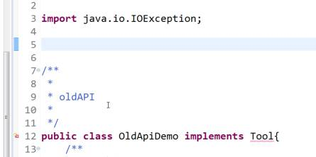
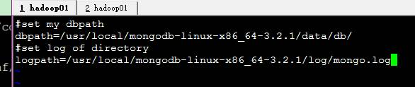
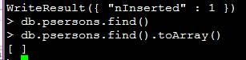
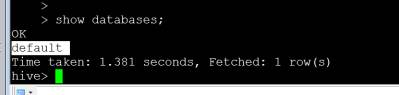
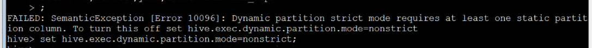
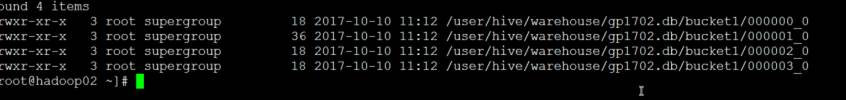
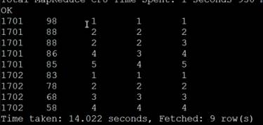
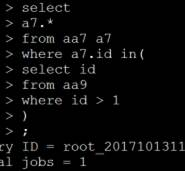
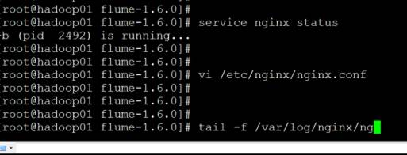
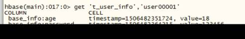

安装hive以及一些配置修改的：.................................................................................
*- 多用户模式：（首先保证有一个mysql已经安装了）..............................................
内外表的修改： 主义都是大写....................................................................................
3制定分区数据对应到已有的数据：（前提是hdfs里面有存在的）.............................
4 添加分区时，指定数据：（前提是hdfs里面有存在的）...........................................
2 Hive的严格模式 也是在hive-site.xml配置文件里面有指明........................................
* 把两张表的结果合并成一个结果集.........................................................................
2 测试数据类型的表以及数据.....................................................................................
2.1 hive的数据文件存储格式：.............................................................................
* orc: 貌似可以用load方式加载(不报错，但是没哟数据，)， 用insert加载.........
1.3 第四种 将自己的代码打包源代码中，（这种就是自定义的-永久的）.............
5.2.对hive表的数据的导入导出：默认^A分隔符.........................................................
2.1 hive-site.xml配置文件中限制配置..................................................................
7. 调整mapper或者reducer的个数............................................................................
*2.N 增量更新：（这里有问题，自己下去再看看）.............................................
*4 打一个hive的远程模式...................................................................................
*1.3 03 收集 01 02 上面的.............................................................................
1.4 flume-ng 和flume-og的区别：......................................................................
Day15
1复习
Combiner:合并
1、继承Reducer<>
2、他是reduce提前执行，也是reducer的特殊实现（可以直接使用自定义的reducer
3、他是mr的一种优化，但是注意场景（记载减少map端到reeduce端的数据传输量,）
去重：将需要去重的放入key中
分布式缓存;
1、将小文件缓存大ohdfs中，然后带map-task执行之前将所有数据共享到这些节点，由于放到内存所以效率较高
2、在驱动中设置缓存文件
3、在map-task中的setup（）方法将缓存文件读取出来,放到内存数据结构中，以供map（）函数使用
Mar中的常用数据类型：
TextWritable
IntWritable
VIntWritable
DoubleWritable
floatWritable
shortWritable
longWritable
VLongWritable
byteWritable
booleanWritable
NullWritable
MapWritable
自定数据类型：
Combiner:倒排索引
昨日任务：
任务：
|
每天登陆过一次的用户总量？登录过两次以上用户总量？登录过三次及以上用户总量？ 2017-09-25 /user/login?uid=18093&passwd=3729857295&gender=1&age=30 2017-09-25 /user/login?uid=18093&passwd=3729857295&gender=2&age=18 2017-09-25 /user/login?uid=186&passwd=3729857295&gender=1&age=30 2017-09-25 /user/login?uid=18093&passwd=3729857295&gender=2&age=31 2017-09-25 /user/login?uid=18342&passwd=3729857295&gender=1&age=30 2017-09-25 /user/login?uid=18093&passwd=3729857295&gender=1&age=23 2017-09-25 /user/login?uid=1834&passwd=3729857295&gender=1&age=30 2017-09-25 /user/login?uid=18093&passwd=3729857295&gender=1&age=52 2017-09-25 /user/login?uid=18093&passwd=3729857295&gender=1&age=30 2017-09-25 /user/login?uid=1854&passwd=3729857295&gender=2&age=22 2017-09-25 /user/login?uid=18768&passwd=3729857295&gender=1&age=30 2017-09-25 /user/login?uid=18093&passwd=3729857295&gender=1&age=19 2017-09-25 /user/login?uid=189873&passwd=3729857295&gender=1&age=30 2、top-N 3、二次排序 78 4、连接查询(map-side\reduce-side) 5、参数传递 6、Chain 7、压缩 8、Hadoop 1 |
|
|
2.开始

chain的运行结果
依赖
重复的越多压缩的越多，月有效果
最后一个 oldApiDemo.java

这里注意要导入短包了
Ba main方法删了
http://archive.apache.org/dist/logging/log4j/
Day16 陈高峰老师代课
1. 复习记录：
|
Hadoop生态圈 Hdfs Yarn Mapreduce Hbase Hive Zookeeper Redis Sqoop Flume Cozie Azkaban Tez Impala Spark storm |
Cnzz 网站流量统计
Habase安装

删了doc文件夹没用
Hbase 配置：全分布式
1.3 hbase集群搭建
----先部署一个zookeeper集群
（1）上传hbase安装包
（2）解压
（3）配置hbase集群，要修改3个文件
注意：要把hadoop的hdfs-site.xml和core-site.xml 放到hbase/conf下
###export
HBASE_CLASSPATH
（3.1）修改hbase-env.sh
|
export
JAVA_HOME=/usr/local/jdk1.7.0_79 //告诉hbase使用外部的zk export
HBASE_MANAGES_ZK=false |
（3.2）修改
hbase-site.xml
|
<configuration> <!-- 指定hbase在HDFS上存储的路径 --> <property> <name>hbase.rootdir</name> <value>hdfs://hadoop01:9000/hbase</value> </property> <!-- 指定hbase是分布式的 --> <property> <name>hbase.cluster.distributed</name> <value>true</value> </property> <!-- 指定zk的地址，多个用“,”分割 --> <property> <name>hbase.zookeeper.quorum</name> <value>hadoop01:2181,hadoop02:2181,hadoop03:2181</value> </property> <!-- 指定hbase的监控页面端口 --> <property> <name>hbase.master.info.port</name> <value>60010</value> </property> </configuration> |
（3.3）修改 regionservers
|
hadoop01 hadoop02 hadoop03 |
(3.3) 修改 backup-masters来指定备用的主节点 这里等到有5台或更高的
|
[root@mini1 conf]# vi backup-masters mini2 |
(3.4) 拷贝hbase到其他节点
scp
-r /weekend/hbase-0.96.2-hadoop2/ weekend02:/weekend/
scp -r /weekend/hbase-0.96.2-hadoop2/ weekend03:/weekend/
scp -r /weekend/hbase-0.96.2-hadoop2/ weekend04:/weekend/
scp -r /weekend/hbase-0.96.2-hadoop2/ weekend05:/weekend/
scp -r /weekend/hbase-0.96.2-hadoop2/ weekend06:/weekend/
(4) 将配置好的HBase拷贝到每一个节点并同步时间。
Server nptd start 启动服务，然后同步时间
Crontab
-e /1 *
* * *
/usr/sbin/ntpdate hadoop02
(5) 启动所有的hbase进程
首先启动zk集群
./zkServer.sh
start
启动hdfs集群
start-dfs.sh
启动hbase，在主节点上运行：
start-hbase.sh
(6) 通过浏览器访问hbase管理页面
192.168.1.201:60010
(7) 为保证集群的可靠性，要启动多个HMaster
hbase-daemon.sh
start master
Shell
命令
进入shell
List
zkCli.sh启动客户端，然后进入
键一个表
插入一条数据 put
查询get
默认按照数据的字典顺序进行了排序
查询表中的数据 scan
修改
base_info:username timestamp=1506482772370, value=fengfeng
删除；
查看定义：
Drop 删除表明 在老版本当中需要设置不可用

Hbase 的机制
Mamstore 挂了不影响数据的查看，但是不能更改表的结构，因为mamstore需要连接hdfs进行数据的操作，mamstoe都是在zookeeper上面完成注册，store是列族
Hadoop02 yarn的调用机制
http://www.aboutyun.com/forum.php?mod=viewthread&tid=22307&extra=page%3D1
other
Day16 mongodb
1复习；
Top_N：
二次拍虚：
参数传递：
压缩：
单表join：
多表join:
Chain链：oozie/Azkaban/自定义调度器
OldApi:
2.mongodb开始
1 Mongodb 的安装
http://www.runoob.com/mongodb/mongodb-linux-install.html
1、解压安装并配置环境变量
2、创建数据库目录
MongoDB的数据存储在data目录的db目录下，但是这个目录在安装过程不会自动创建，所以你需要手动创建data目录，并在data目录中创建db目录。
以下实例中我们将data目录创建于根目录下(/)。
注意：/data/db 是 MongoDB 默认的启动的数据库路径(--dbpath)。
mkdir -p ./data/db
3、命令行中运行 MongoDB 服务
你可以再命令行中执行mongo安装目录中的bin目录执行mongod命令来启动mongdb服务。
注意：如果你的数据库目录不是/data/db，可以通过 --dbpath 来指定。
[hadoop@hadoop007 mongodb-linux-x86_64-3.2.1]$ ./bin/mongod --dbpath ./data/db/ --rest &
4、MongoDB后台管理 Shell
如果你需要进入MongoDB后台管理，你需要先打开mongodb装目录的下的bin目录，然后执行mongo命令文件。
MongoDB Shell是MongoDB自带的交互式Javascript shell,用来对MongoDB进行操作和管理的交互式环境。
当你进入mongoDB后台后，它默认会链接到 test 文档（数据库）：

$ cd /usr/local/mongodb/bin
[hadoop@hadoop007 mongodb-linux-x86_64-3.2.1]$ ./bin/mongo
MongoDB shell version: 3.2.1
connecting to: test
Welcome to the MongoDB shell.
……
由于它是一个JavaScript shell，您可以运行一些简单的算术运算:
> 2+2
4
> 3+6
9
现在让我们插入一些简单的数据，并对插入的数据进行检索：
>
db.qf1603.insert({"class":1603})
db.qf1603.insert({"name":1603})
2 创建表
#创建mongodb数据库：hadoop
use hadoop
#显示当前mongodb数据库：
db
#删除当前库下的集合persons：
db.persons.drop()
#往persons集合中插入数据：(只能查如一个集合)
db.persons.insert({name:"zhangsan",age:15,sex:"M"})
db.persons.insert({name:"lisi",sex:"M"})
db.persons.insert({name:"wangwu",age:18})
db.persons.insert({name:"xiaoer",age:18,sex:"M"})
db.persons.insert({name:"tom",age:17})
db.persons.insert({name:"Helen",age:15,sex:"F"})
db.persons.insert({name:"Judy",age:15,sex:"F"})
db.persons.find().toArray()
显示库下的所有集合：
show collections;
Exit
Ctrl+z
插入数据
查看集合（表）


Day17 国庆前一天
主从数据库mysql
老师装mysql
服务端先安装，再来客户端
然后查看状态：
Service mysql status - service mysql start 启动服务
搭一主从：
开始： 主从需要开启两台机子，mysql服务都需要开启，权限都需要有，相当于高可用什么的
最少两台机子，
192.168.111.123 主
192.168.111.124 从
创建一个qf 数据库
在hadoop02当中，导入sql
授权语句在mysql里面，连接hadoop01是在外面
然后就登陆成功到hadooop01 主上面
然后再hadoop01上面配置主从服务
然后进入进去进行配置：
我的这个里面本来就有
设置哪一个数据库需要是主从数据库 这里是hadoop01 里面 /etc/my.cnf 里面的配置文件
然后在重启一下哈doop 01 下的sql
看下
再看下
然后看hadoop02里面
然后再hadoop01里面执行
02里面
change master to
master_host='192.168.111.123',
master_user='root',
master_password='root',
master_log_file='mysql-bin.000023',
master_log_pos=107;
02上面的
错了怎么办：
加上一个这个（这个是我的那个错误，我也纳闷，）
测试：
主从就是在住机器上面进行的操作，在2上面可以同时备份，但是你在从上面进行修改，在主上面没有办法进行同步，所以自己配置双主；
配置双主：
下午
赵元数据
Ll /var/lib/mysql/qf/,user.frm存储的是mysql的存储结构，
村的数据
存的索引 ，一般就备份这三个文件
十一国庆来之后的HIVE：
2.0能够支持habase等其他的（好像是这个）
本身处理速度就比较慢，数量级不一样,
能够把csv、jeson甚至是文本呢格式的数据映射成有关系的数据
Day18 HIVE:
Hive是怎么出现的？？ 问hive元数据 存储到哪（单用户：存储到自带的derby中，跑任务的话就存储到关系型数据库当中）， derby
接受人群多，接收容易
开发效率比较高 ，没有高可用集群之说，但是本身就是个分布式概念，因为是基于hadoop的
2. Hive到底是什么？
是一个数据仓库工具，分布式存储
3 hive构架图？
4 Hive的安装？？
hive的安装？？
1 Hive 三种元数据存储：
Hive 将元数据存储在 RDBMS 中，有三种模式可以连接到数据库：
Single User Mode： 此模式连接到一个 In-memory 的数据库 Derby，一般用于 Unit Test。
优点：安装简单
缺点：使用hive自带的内存数据库derby来存储元数据，该数据库只支持单session
Multi User Mode：通过网络连接到一个数据库中，是最经常使用到的模式。
优点：可以支持多个用户同时连接(元数据存储到关系型数据库中)
缺点：需要安装存存储元数据的关系型数据库，hive需要进行配置
1、解压hive并配置环境变量
2、修改conf/hive-default.xml.template ./conf/hive-site.xml
|
<configuration> <!--指定元数据库的连接信息--> <property> <name>javax.jdo.option.ConnectionURL</name> <value>jdbc:mysql://192.168.111.123:3306/hive</value> </property> <!--指定元数据库的连接的驱动--> <property> <name>javax.jdo.option.ConnectionDriverName</name> <value>com.mysql.jdbc.Driver</value> </property> <!--指定元数据库的用户名--> <property> <name>javax.jdo.option.ConnectionUserName</name> <value>root</value> </property> <!--指定元数据库的密码--> <property> <name>javax.jdo.option.ConnectionPassword</name> <value>root</value> </property> <!--指定hive的数据仓库目录--> <property> <name>hive.metastore.warehouse.dir</name> <value>/user/hive/warehouse</value> </property> <property> <name>hive.cli.print.current.db</name> <value>true<value> </property> <property> <name>hive.aux.jars.path</name> <value>$HIVE_HOME/auxlib/<value> </property> </configuration> |
3、修改./conf/hive-site.xml配置文件：
4、在mysql的服务器上去创建自定的hive的元数据库，并指定编码为latin（这里不创建的话，hive起不起来，还有需要注意的是mysql里面要有存储元数据的hive数据库）
5、将hive对应的mysql元数据库的驱动拷贝到hive根目录下的./lib目录下(cp /home/mysql-connector-java-5.1.6-bin.jar /usr/local/hive-1.2.1/lib/)
6、启动hive并测试；
脚下留心:
这里还需要制定hadoop的安装目录Hive-env.sh.template -> hive-env.sh (这里面配置制定hadoop的安装路径，一定要进行配置这里面的路径否则hive启动不起来)
第三种：带看
Remote Server Mode：用于非 Java 客户端访问元数据库，在服务器端启动一个 MetaStoreServer，客户端利用 Thrift 协议通过 MetaStoreServer 访问元数据库。
优点：支持多用户同时连接，可以再多台服务器上同时部署hive
缺点：需要安装存存储元数据的关系型数据库，hive需要进行配置；需要在部署hive的服务器上连接server；需要启动metstoreserver服务。
CLI :commit line interface 命令行接口
Driver:解释器
Compiler:编译，会联系metastore元数据，生成一个job，多个task（stage）
Optimizer:优化器：
Executor:执行：
metastore：hive的元数据(库名、表名、字段、字段类、创建时间、创建人型、表类型、分区等的信息)
安装hive以及一些配置修改的：
配置环境变量
Which hive
启动的话直接hive
这里的话需要吧hadoop的集群给打开，因为hive是基于hadoop 的，所以需要吧集群打开，我这里是因为是zkServer.sh 高可用，所以开启集群的时候一定要
千万要先开启zkService.sh start 在开启 all(start-all.sh )
Hive的几个配置内容
|
<?xml version="1.0" encoding="UTF-8" standalone="no"?> <?xml-stylesheet type="text/xsl" href="configuration.xsl"?> <configuration> <!--指定元数据库的连接信息--> <property> <name>javax.jdo.option.ConnectionURL</name> <value>jdbc:mysql://192.168.111.123:3306/hive</value> </property> <!--指定元数据库的连接的驱动--> <property> <name>javax.jdo.option.ConnectionDriverName</name> <value>com.mysql.jdbc.Driver</value> </property> <!--指定元数据库的用户名--> <property> <name>javax.jdo.option.ConnectionUserName</name> <value>root</value> </property> <!--指定元数据库的密码--> <property> <name>javax.jdo.option.ConnectionPassword</name> <value>root</value> </property> <!--指定hive的数据仓库目录--> <property> <name>hive.metastore.warehouse.dir</name> <value>/user/hive/warehouse</value> </property> <property> <name>hive.cli.print.current.db</name> <value>true<value> </property> </property> <!-- 默认的jar包-- > <property> <name>hive.aux.jars.path</name> <value>$HIVE_HOME/auxlib/</value> </property> </configuration> |
下面这样就启动起来了，就是CLI端
然后看一下有一个默认的库

创建一个
老师的这个是在单机的模式下面，因为有了user文件夹了。所以你创建数据库的时候会报错，因为单机版的在根目录下面汇创建一个/user/hive/warehouse/的文件夹，并且create database 再次目录下面，所以删除了当前linux虚拟机根目录的user 再次创建gp1701 就可以了
然后在创建一个数据仓库就可以成功了
下面这个就是刚才创建的
在这里面启动hive，想要在这里面使用linux命令的话就直接在前面加上一个 感叹号
下面这个就是derby实例
然后老师进入了home目录下面的aa目录，在这里启动hive，就在这里面创建了俩文件夹，这里需要注意一下，这里连接之后，你还想在其他地方启动就启动不起来了，这就是单用户模式的注意点，
老师这里进来aa里面是可以启动hive的，但是要注意的是： 这里启动的hive是不能看到刚才在hive-1.2.1创建的数据库的，然后与此同时在另外一个终端开启hive，是不能开启的，因为已经有一个连接了 ，所以不能再有一个了这时要注意的
2然后进行多用户模式，这里的default需要去掉，还有后面的template也去掉
hive-default.xml.template -> hive-site.xml
Hive-env.sh.template -> hive-env.sh (这里面配置制定hadoop的安装路径，一定要进行配置这里面的路径否则hive启动不起来)
配置hive指定的hadoop路径
Mysql 修改编码
注意这里面进行更改mysql的编码的时候，不能直接修改 /etc/my.cnf 里面的编码，否则启动不来mysql服务，但是这里也不能对mysql设置编码的地方进行屏蔽了，否则也不能够进行正常启动mysql
Hive创建表的基本命令？
注意创建数据库的时候应该注意不能是数字开头，命名规范
|
create table if not exists sex( id int, sexlab String ) row format delimited fields terminated by ‘\t’; #下面这个是列与列之间的分隔符 |
|
# hdfs 的数据映射到表当中 load data inpath ‘/sex’ table sex;
|
然后创建一下表
显示出来
加载数据：
load data local inpath '/home/hivedata/buc' into table
bucket1;
load data inpath '/home/wyp/add.txt' into table wyp;
列举老师课堂的命令
|
hive的基础命令？？ 注释： -- 在cli端使用linux命令： ! ls; 在cli端操作hdfs文件系统命令： dfs -ls /; 在cli端使用;来触发命令执行 创建库： create database if not exists gp1701; 显示库： show databases; 切换库： use gp1701; 删除空库： drop database if exists gp1701; 强制删除库： drop database if exists gp1701 cascade; 查看库描述： desc database default; 创建表： create table [if not exists] tableName( id bigint [comment 'this userId'], name String, sex tiyint ) partitioned by(String year,int month,int day) comment 'this is table of user' row format delimited fields terminated by '\t' lines terminated by '\n' stored as textfile 说明是纯文本没有压缩sequence location '/创建一个文件，饶入到当前这个表中' 只能跟hdfs中的目录 ; create table if not exists u1( id bigint comment 'this userId', name String, sex tinyint ) comment 'this is table of user' row format delimited fields terminated by '\t' lines terminated by '\n' stored as textfile ; create table if not exists u2( id bigint comment 'this userId', name String, sex tinyint ) comment 'this is table of user' row format delimited fields terminated by '\t' lines terminated by '\n' stored as textfile ; 显示表： show tables; 查看表描述： desc u1; desc extended u1; desc formatted u1; show create table u1; 创建表的本质： 在hdfs中对应的库下面创建目录，在元数据表中添加对应的信息。 加载数据的本质： 将数据copy或者是移动到表目录下面即可。 加载数据： load data local inpath '/home/hivedata/u1' overwrite into table u1; 加上local表示的是本地 load data inpath '/cp' overwrite into table u1; 不加local 就是hdfs上面的 insert into u1 select id,name,sex from u2 ; CREATE TABLE log( id string COMMENT 'this is id column', phonenumber bigint, mac string, ip string, url string, tiele string, colum1 string, colum2 string, colum3 string, upflow int, downflow int ) COMMENT 'this is log table' ROW FORMAT DELIMITED FIELDS TERMINATED BY '\t' LINES TERMINATED BY '\n' stored as textfile; load data local inpath '/home/flow.log' overwrite into table log; load data local inpath '/home/hivedata/u1' overwrite into table log; select l.phonenumber, sum(l.upflow+l.downflow) as ud from log l group by l.phonenumber order by ud desc limit 3 ; |
*- 多用户模式：（首先保证有一个mysql已经安装了）
首先该几个配置文件
然后进入hive-env.sh

这两个一个是路径，也可以在外面，一个是jar包制定路径（老师这里没有东任何东西）
*然后进入
把东西复制出来一份，把东西都删光
数据仓库的目录
创建表的时候又有一个
1、解压hive并配置环境变量
2、修改conf/hive-default.xml.template ./conf/hive-site.xml
3、修改./conf/hive-site.xml配置文件：
4、在mysql的服务器上去创建自定的hive的元数据库，并指定编码为latin
5、将hive对应的sql元数据库的驱动拷贝到hive根目录下的./lib目录下(cp /home/mysql-connector-java-5.1.6-bin.jar /usr/local/hive-1.2.1/lib/)
6、启动hive并测试；
在mysql中创建一个hive的默认数据库仓库表，启动hive命令，自己就创建文件了
拷贝jar包
手动创建数据库：
首先在hdfs文件系统里面的配置的响应的文件夹里面进行响应文件的创建，如下图
然后再数据库这边手动的添加一行数据 在这里DBSl里面手动添加一个 描述跟id都不用写，只需要写后面的root

可以改
下午：
hive的基础命令;
注释： --
在cli端使用linux命令： ！ ls;
在cli端操作hdfs文件系统命令 dfs -ls /;
在cli端使用; 来出发
创建库：
Create database if not exists gp1701;
显示库：
Show databases;
切换库：
use gp1701;
删除空库：
Drop if exists gp1701;
强制删除库：
Drop database if exists gp1701 cascade;
创建数据库也可以在hadoop里面创建一个一个文件夹
下面这个仅仅支持当前session ，过期就失效了
会给你指出来是在哪一个数据库当中哟用
创建表没有权限：
· mysql> CREATE USER 'hive' IDENTIFIED BY 'mysql';
· mysql> GRANT ALL PRIVILEGES ON *.* TO 'hive'@'192.168.111.123' WITH GRANT OPTION;
· mysql> flush privileges;
：如果不创建hive数据库制定的是utf ，那么 你可能进入hive 之后可以查看数据库，但是不能创建表：
此时执行如下：
alter database hive character set latin1;
就可以了 ；
创建表：
create table [if not exists] tableName(
id int [comment 'this userId'],
name String,
sex tinyint
)
partitioned by (String year,int month,int day)
comment '里面写的是注释，this is table of user '
//row format delimited terminated by '\t' ^A \001 ‘u/0001’
//row format delimited terminated by '\001' ^A \001 ^A对应的是--/001 linux 当中想要打出来^A 就是ctrl+v ctrl+a
row format delimited fields terminated by '\t' 列与列之间的分隔符
lines terminated by '\n'
//设置的就是文档格式这里制定得失文本文件
stored as textfile
//表映射的目录，只能hdfs 里面的目录
location '/inputdata'
;
//下面是执行的创建文本
create table [if not exists] tableName(
id int [comment 'this userId'],
name String,
sex tinyint
)
row format delimited fields terminated by '\t'
lines terminated by '\n'
stored as textfile
location '/inputdata'
;
显示表：
show tables ;
查看表描述:
desc u1;
desc extended u1;//看得更多一点的
desc formatted u1;
show create table u1;//查看的是创建语句
创建标的本质：
在hdfs中对应的库下创建目录，在元数据表中添加对应的信息。
加载数据：
有local就是复制，有overwrite 就是覆盖
这里用hdfs文件系统
load data inpath '/cp' overwrite into table u1 ; //y
load data local inpath '/home/hivedata/u1'
load data local inpath '/home/hivedata/u1' overwrite into table u1;
insert into u1
select id,name,sex
from u2
这个语句就会转换成mapreduce，就得启动yarn ，不启动就跑不了
就是把u2中的添加到u1中，如果用overwite的话就会覆盖
加载数据的本质：
将数据copy或者是移动到表目录下面去即可，映射，再copy上去就行了
吧flow.log load到hive中，
然后查询流量相加的语句，其实就是吧sql语句换成mapreduce ，
select
1.phonenumber
sum(1.upflow+1.downflow) as ud
from log 1
gropy by 1.phonenumber
order by ud desc
limit 3 ;
Hive 是读时模式，mysql等关系型数据库就属于写时模式是比较严格的，比如写数据的时候字段不一样就插不进去。
Hive的外部表和内部表：
managed 内部 把所有数据都清空了
exte外部 只删除原数据 ，实际数据都还存在，所以一般都是创建外部表
Hive创建的其实就是内部表，要想创建外部表
使用场景：
内部表：多用于临时表、中间表
外部表：用于元数据
这里有一个创建数据表的代码，对应flow.log的字段
Select * from 就是不用mapreduce
修改表
修改表明：rename to
alter table u1 rename to u3;
修改字段; change column
alter table u3 change column id myid int comment ‘这是注释’
alter table u3 change column myid id ;
alter table u3 change column myid id String;
alter table u3 change column id id int ;
alter table u3 change column id myid int after name ;
alter table u3 change column id myid int first;
删除表内容：
truncate table tablename;
添加字段：add columns
alter table u3 add columns (
age int ,
add String
);
删除字段：replace columns
alter table u3 replace columns(
age int ,
add String
);
alter table u3 replace columns(
Age int ,
add String
);
内外表的修改： 主义都是大写
修改表内部表为外部表：
alter table u3 set tblproperties (‘EXTRENAL’=’TRUE’);//这里的小写就不行extrenal
修改表外部表转换成内部表：
alter table u3 set tblproperties (‘EXTRENAL’=’false’); //这里的小写就可以
alter table u3 set tblproperties (‘EXTRENAL’=’FALSE’);
desc u1;
desc extended u1;//看得更多一点的
desc formatted u1;
show create table u1;//查看的是创建语句
|
|
Stored as textfile 修改的是下面的这个配置
2 分区表：
分区表：为什么创建分区表？？
单表数据量随着时间越来越大，hive为了避免全表扫描，引入分区，（将单张标的数据根据条件细分到不同的目录）
Hive和mysql分区表的区别？
Hiv 分区使用的表外字段，二mysql分区使用的是表内字段
hive分区标的细节？？
1、hive分区的字段是一个为字段，他不会在表中真实存在，可以用来过滤查询
2、一个表或者一个分区可以有多个分区，而每一个分区都是以目录的形式存在
2.1怎么分区
根据业务。低于、年、月、日性别。
分区的关键字：
partitioned by
创建一个一级分区：
2.1怎么分区（一级）
create table if not exists comm(
id int,
comment String,
dt String
)
partitioned by(year String)
row format delimited fields terminated by '\t'
;
load data local inpath '/home/hivedata/d1' into table comm partition(year='2015');
load data local inpath '/home/hivedata/d2' into table comm partition(year='2016');
load data local inpath '/home/hivedata/d3' into table comm partition(year='2017');
desc comm 可以显示出来year
show partitions comm; //没加载数据就没有分区
在/home/hivedata/d1 -d3 创建不同时间段的文件；
然后利用下面命令创建分区
Load数据，相当于创建了一个目录（注意分区不要用中文）
hdfs dfs -cat /user/hive/warehouse/gp1701.db/comm/year=2015/d1 注意.db 自己测试的时候没有加上，加上了就找不到了
1 comment1 2015-10-4
2 comment2 2015-10-4
3 comment3 2016-10-4
4 comment4 2016-10-4
5 comment5 2017-10-4
6 comment6 2017-10-4
7 comment7 2017-10-4
2.2创建一个二级 的分区
创建二级分区：
create table if not exists comm1(
id int,
comment String,
dt String
)
partitioned by(year String,month int)
row format delimited fields terminated by '\t'
;
数据
d4
1 comment1 2015-9-4
1 comment1 2015-9-1
1 comment1 2015-9-2
11 comment11 2015-9-7
d5
2 comment2 2015-10-4
22 comment22 2015-10-6
--
d6
3 comment3 2016-9-4
d7
4 comment4 2016-10-4
--
d8
5 comment5 2017-9-4
d9
6 comment6 2017-10-4
7 comment7 2017-10-4
进行数据上传
load data local inpath '/home/MyStudyTest/hivedata/d4' into table comm1 partition(year='2015',month=9);
load data local inpath '/home/MyStudyTest/hivedata/d5' into table comm1 partition(year='2015',month=10);
load data local inpath '/home/MyStudyTest/hivedata/d6' into table comm1 partition(year='2016',month=9);
load data local inpath '/home/MyStudyTest/hivedata/d7' into table comm1 partition(year='2016',month=10);
load data local inpath '/home/MyStudyTest/hivedata/d8' into table comm1 partition(year='2017',month=9);
load data local inpath '/home/MyStudyTest/hivedata/d9' into table comm1 partition(year='2017',month=10);
-- 下面是老师上课讲的一些
load data local inpath '/home/hivedata/d1' into table comm1 partition(year='2015',month=10);
load data local inpath '/home/hivedata/d4' into table comm1 partition(year='2016',month=09);
load data local inpath '/home/hivedata/d5' into table comm1 partition(year='2016',month=10);
load data local inpath '/home/hivedata/d6' into table comm1 partition(year='2017',month=09);
load data local inpath '/home/hivedata/d7' into table comm1 partition(year='2017',month=10);
弄完之后就可以进行数据的查询了，可以吧分区的两个字段按照两个条件查询出来
select * from comm1 where year =2015 and month =9;
修改
在sds里面要修改
分区弄完之后就可以按照字段进行查询了
3设置为严格模式
严格模式下面有几个语句是不允许进行的
报错如下，规定的这些语句会浪费性能，既然分了区，就不用直接普通查询，
hive的严格模式：
hive.mapred.mode=strict（默认nmostrict）
hive提供给用户一种严格模式来保障用户提交恶意的执行语句：
Cartesian Product. 笛卡尔积。
No partition being picked up for a query. 没有为查询提取分区。
Comparing bigints and strings. bigints和字符串的比较。
Comparing bigints and doubles. bigints和doubles的比较。
Orderby without limit. 排序没有分页
严格模式将会阻止一下几类查询：
set hive.mapred.mode=strict;
1、笛卡尔积查询
select
c3.*,
c4.*
from comm4 c4
join comm3 c3
;
2、分区不带where条件并且where条件中不带分区字段来过滤：
select
*
from comm3
where year = 2016
;
3、排序不带limit：
select
*
from comm3
where year = 2016
order by id desc
limit 2
;
注意：
1、静态分区会创建分区目录，而动态分区则会根据select是否有结果集来创建分区目录。
2、动态分区需要注意合理的设计，因为动态分区会为每个分区分配一个mapper/reducer,如果分区数量多，
则有可能对namenode造成灾难。
3、分区字段一定是表外字段。
数据类型：
分区，
数据格式，
内部函数，
自定义函数，
Day19 hive第二天
1 .hive 继续：
继续昨天的对分区球进行修改
显示分区 ：show partitions comm1;
添加分区：
alter table comm add partition (year=”2018”);
alter table comm add partition (year=”2018”);
alter table comm add partition (year=”2018”) partition (year=”2019”); 也是可以的，一次性创建多个
修改已经存在的分区：
第一种方式：
alter table comm partition(year=”2021”) rename to partition (year=”2016”); 这样就可以直接修改了
第二种方式：
吧2016 修改成2021 是可以的，但是可以通过修改原数据
修改元数据
然后再sds里面给修改了
还需要修改第三张表
改了之久还需要修改路径也就是hdfs里面的路径

便完成了修改
3制定分区数据对应到已有的数据：（前提是hdfs里面有存在的）
下面这一行是个错误的示范
错误： alter table comm partition(year=”2020”) set location “/usr/hive/warehouse/gp1701.db/comm/year=2016”;
正确：指定分区对应到已有的数据：
alter table comm partition(year="2020") set
location 'hdfs://hadoop01:9000/user/hive/warehouse/gp1702.db/comm/year=2016';
便可以了 ，吧2016 分区的数据加入到2020 分区中
4 添加分区时，指定数据：（前提是hdfs里面有存在的）
alter table comm add partition(year="2021") location 'hdfs://hadoop01:9000/user/hive/warehouse/gp1702.db/comm/year=2016';
5 删除分区：
alter table drop partition(year=”2021”) ;
一次性删除多个分区
注意需要逗号分割，添加的时候空格就行，这里空格不行
alter table comm drop partition(year=”2021”) , partition (year=”2010”);
分区方式：
2.1.三种方式
静态分区：对分区已经知道，并可以使用load方式加载数据
动态分区：对分区未知，同时不能使用load方式加载数据 dynamic 动态
混合分区：静态和推动台同时有
动态分区：配置文件 hive-site.xml 允许动态分区
1. 配置是否允许
2. Hive.exec.dynamic.partition true
2 分区模式 ，就是在严格模式下面进行,所有的都是 （严格模式下必须有一个是静态分区，非严格模式都是动态分区）
3 动态分区最大分区数：

4 单个节点上面容许进行的动态分区是多少
5 一个作业生成文件数量 默认1024 65535
总结：
临时表：
这里创建一张表：
|
create table if not exists comm_tmp1( id int, comment String, year String, month String ) row format delimited fields terminated by '\t' ; |
然后加载一下数据
这里加载 d1-d3三个文件当中的数据到comm_tmp当中，
Ct里面的数据
|
5 dsahk5 2015 10 6 dsahk6 2015 10 9 dsahk9 2015 10 3 dsahk3 2016 08 4 dsahk4 2016 10 1 dsahk1 2017 10 2 dsahk2 2017 09 7 dsahk7 2017 10 8 dsahk8 2017 10 |
|
load data local inpath '/home/hivedata/ct' into table comm_tmp1; |
在创建一个表当中
|
create table if not exists comm3( id int, comment String ) partitioned by(year String,month int) row format delimited fields terminated by '\t' ; |
然后把comm1当中的数据按照年份添加到comm3当中
动态添加分区加载数据 (用insert方式去跑，会转换成mapreduce方式添加)
insert into table comm3 partition(year,month)
select id,comment ,year,month from comm_tmp1 ;
然而这里会报错，你需要至少制定一个静态分区
这里要么添加一个静态分区要么你把模式改一下

改成费静态的
所以上面的insert语句换成如下的语句
|
insert into table comm3 partition(year,month) select id,comment,year,month from comm_tmp1 ; |
然后查看一下分区
五个分区（但是需要注意的是，数据比较多的时候容易当机，所以需要自己制定好任务比较多）
1 需求： + 1 ：混合分区
|
混合分区： create table if
not exists comm4( id int, comment String ) partitioned
by(year String,month int) row format
delimited fields terminated by '\t' ; insert into
table comm4 partition(year=2016,month) select
id,comment,month from comm_tmp1 where year=2016 ; |
某一年的数据按照月份，这样会比
上面的insert语句报错，然后这个一个map就解决了
然后就可以进行查询了
2 Hive的严格模式 也是在hive-site.xml配置文件里面有指明
Hive。mapred.mode=nonstrict
hive提供给用户一种严格模式来保障用户提交恶意语句的执行语句；
严格模式将会阻止一下积累查询：
1、第一种是笛卡尔机的查询方式 （两张的成绩）
|
select c3.* , c4.* from comm4 c4 join comm3 c3 ; 严格模式下面会被阻止 |
2、分区表不带where条件并且where条件中不带分区字段来过滤
|
select * from comm3 where year =1 ; 这是不行的，没有按照分区字段 下面这个是可以的因为按照了分区字段 select
* from
comm3 where
year = 2016 ; |
3、Orderby without limt . 排序不带limit （分页）
|
select * from comm3 where year =2016 order by id desc limit 2 ; |
4、两种bigints - String 两种类型转换，不允许
注意：
1、静态分区 会创建分区目录，而动态分区则会根据select是否有结果集
来创建目录
2、动态分区需要注意合理的设计，因为动态分区会为每个分区分配一个mapper/reducer. 则有可能对namenode造成灾难
3、分区字段一定是表外字段。
3 分区说完，分桶
3.1 分桶的基本：
为什么分桶？？
将表数据或者是分区数据更加细腻度的划分。
分桶的关键字：
bucket
:
怎么分桶？使用分桶字段对其hash值，然后模于总的桶数得到的余数就是将要去的桶。
|
怎么分桶？？使用分桶字段对其hash值，然后模于总的桶数得到的余数就是将要去的桶。 create table if not exists bucket_tmp( id int, comment String ) row format delimited fields terminated by '\t' ; load data local inpath '/home/hivedata/buc' into table bucket_tmp; 创建分桶表：clustered by(id) into 4 buckets create table if not exists bucket1( id int, comment String ) clustered by(id) into 4 buckets row format delimited fields terminated by '\t' ; 对分桶表加载数据(load方式加载分桶数据并没有真正的划分数据)： load data local inpath '/home/hivedata/buc' into table bucket1; |
需要有数据：
|
5 dsahk5 6 dsahk6 9 dsahk9 3 dsahk3 4 dsahk4 1 dsahk1 2 dsahk2 7 dsahk7 8 dsahk8 9 dsahk9 |
然后加载数据：
查询并且有了上面的数据：
创建分桶表
|
这里后面改成了bucket1 |
对分桶表加载数据：分桶从0 开始的 （load方式加载分桶数据，并没有真正的划分数据，和传统的一样
，并没有真正划分多个表）
|
load data local inpath '/home/hivedata/buc' into table bucket1; |
#注意：分桶用的是表内字段，分区用的是表外字段
查询数据；
然后
#在使用insert into 加载数据时，设置开启自动分桶
(这个在hive-site.xml里面查找 配置文件 就可以查找到的)
|
set hive.enforce.bucketing=true; |
|
Insert into bucket1 select id ,comment from bucket_tmp; |
|
|
然后查询

查询分桶数据：
select * from bucket1;
查询第一桶 tablesample (bucket x out of y on id )
x:z从第一桶开始 y:总的桶数 x 不能大于y ，y总的桶数尽量是源棕桐树的倍数。
|
5 dsahk5 6 dsahk6 9 dsahk9 3 dsahk3 4 dsahk4 1 dsahk1 2 dsahk2 7 dsahk7 8 dsahk8 9 dsahk9 select * from bucket tablesample(bucket 2 out of 4 on id); select * from bucket tablesample(bucket 2 out of 2on id); select * from bucket tablesample(bucket 1 out of 1 on id); select * from bucket tablesample(bucket 1 out of 8 on id); 一桶分成两桶，所以这个取出来的就是第一桶的一半 select * from bucket tablesample(bucket 5 out of 8 on id); 第三通的前半
select * from bucket tablesample(bucket 2 out of 8 on id);
select * from bucket tablesample(bucket 1 out of 8 on id);
select * from bucket tablesample(bucket 4 out of 8 on id);
|
select * from bucket tablesample(bucket 1 out of 4 on id);
1 代表从第几桶开始
4 桶数
查询结果如下：
再来一个
select * from bucket tablesample(bucket 1 out of 2on id);
2 2+4=6 //超过棕桶数 不能查询
1 1+4/2=3 所以是 1、3两个桶的数据
查询的是第一桶第三通
1 代表从第几桶开始
4 桶数
下面的 第二个第四个文件
4分桶的意义：
分桶的意义：
1、使抽样更加高效 抽样语法：tablesample
(bucket x out of y on id )
2、是查询更加高效，但是需要对被过滤的字段或者是连接的字段都放到桶内
5分桶最终理解：
x代表从第几个桶 开始 y ， x+ n/(n/y) :代表桶数 也就是从x桶开始 后面醉倒到底几个桶。
这个 取得的后面的公式的桶数 x 桶 、 x+n(n/y) 这两个桶
网上搜的
注：tablesample是抽样语句，语法：TABLESAMPLE(BUCKET
x OUT OF y)
y必须是table总bucket数的倍数或者因子。hive根据y的大小，决定抽样的比例。例如，table总共分了64份，当y=32时，抽取(64/32=)2个bucket的数据，当y=128时，抽取(64/128=)1/2个bucket的数据。x表示从哪个bucket开始抽取。例如，table总bucket数为32，tablesample(bucket 3 out of 16)，表示总共抽取（32/16=）2个bucket的数据，分别为第3个bucket和第（3+16=）19个bucket的数据。 x 个桶的数据， x+n(n/y) ；
随机抽取查询数据
1按行查询
select *
from bucket order by rand() limit
3; 随机抽取三行
select *
from bucket tablesample(1 rows ); 这种的抽取的就是前一行
select *
from bucket tablesample(2 rows ); 这种的抽取的就是前两行
2按照大小抽取
select *
from bucket tablesample(2M );
select *
from bucket tablesample(2K );
select *
from bucket tablesample(2B ); B K
M G
3按照百分比抽取
select *
from bucket tablesample(20 percent ); 这种的抽取的就是前两行
4总结：
后三种都不是随机的，第一种是随机的会比较慢
分区下面分桶：
|
1 safd1 1 2 safd2 2 3 safd3 1 4 safd4 2 5 safd5 2 6 safd6 1 7 safd7 1 8 safd8 2 9 safd9 1 |
分区下面分桶：
查询男工号，工号为双数
|
create table if not exists en_tmp( eno int , name String , sex String ) row format delimited fields terminated by '\t' ; |
数据放入；
|
1 小明1 1 2 小明2 2 3 小明3 1 4 小明4 1 5 小明5 2 6 小明6 1 7 小明7 2 8 小明8 1 9 小明9 1 load
data local inpath '/home/MyTempTest/hive/hive02/en' into table en_tmp; create table if not exists en_buc( eno
int , name
String ) partitioned
by (sex String) 注意顺序西安分区在分桶 clustered
by (eno) into 2 buckets row
format delimited fields terminated by '\t'; |
然后进行模式设置
|
set
hive.exec.dynamic.partition.mode=nonstrict; insert
into table en_buc partition(sex) select
eno,name,sex from en_tmp ; |
分区本质就是分目录（也就是文件夹，分桶就是分成多个文件）
下午：
select
join /left join /left semi join /right join /right outer join
where
group by
having
order by / sort by /distributed by
limit
union /union all
全表扫描？
带过滤的条件扫描？？
1、尽量避免使用join，但是join一般避免不了。
2、尽量避免使用子查询 、 in 、 not in等查询。
3、永远是小表驱动大表（小结果集驱动大结果集）
4、使用map端的join比reduce端的join效率高。
left join 、 left semi join (左半连接) 、 left outer join :
select
join /left join /left semi join /right join /right outer join
where
group by
having
order by / sort by /distributed by
limit
union /union all
全表扫描？
带过滤的条件扫描？？
1、尽量避免使用join，但是join一般避免不了。
2、尽量避免使用子查询 、 in 、 not in等查询。
3、永远是小表驱动大表（小结果集驱动大结果集）
4、使用map端的join比reduce端的join效率高。
* 数据：
|
# 练习 create table dept ( deptno int, dname String, loc String ) row format delimited fields terminated by ',' ; load data local inpath '/home/hivedata/dept' into table dept; create table emp ( empno int, ename String, job String, mgr int, hiredate String, sal int, comm int, deptno int ) row format delimited fields terminated by ',' ; load data local inpath '/home/hivedata/emp' into table emp; 数据如下： 10,ACCOUNTING,NEW YORK 20,RESEARCH,DALLAS 30,SALES,CHICAGO 40,OPERATIONS,BOSTON emp: EMPNO, ENAME, JOB, MGR, HIREDATE, SAL,COMM,DEPTNO 7369,SMITH,CLERK,7902,1980-12-17,800,null,20 7499,ALLEN,SALESMAN,7698,1981-02-20,1600,300,30 7521,WARD,SALESMAN,7698,1981-02-22,1250,500,30 7566,JONES,MANAGER,7839,1981-04-02,2975,null,20 7654,MARTIN,SALESMAN,7698,1981-09-28,1250,1400,30 7698,BLAKE,MANAGER,7839,1981-05-01,2850,null,30 7782,CLARK,MANAGER,7839,1981-06-09,2450,null,10 7788,SCOTT,ANALYST,7566,1987-04-19,3000,null,20 7839,KING,PRESIDENT,null,1981-11-17,5000,null,10 7844,TURNER,SALESMAN,7698,1981-09-08,1500,0,30 7876,ADAMS,CLERK,7788,1987-05-23,1100,null,20 7900,JAMES,CLERK,7698,1981-12-03,950,null,30 7902,FORD,ANALYST,7566,1981-12-02,3000,null,20 7934,MILLER,CLERK,7782,1982-01-23,1300,null,10 |
left join 、 left semi join (左半连接) 、 left outer join :
1查询领导：
select
e1.ename
from emp e
left join emp e1
on e.mgr =e1.empno
where e.ename ="JONES";
2 查询
还是左边的信息
3 查询

4 查询没有部门id的员工
先设置为非严格模式
四个job
*查询没有部门的 第二种方式做链接比第一种块许多
同样的1个job
上述三者都是已做表为准，来匹配右表，右表匹配不上则用null代替
####right join 、 right outer join 、
hive 不支持right semi join
上述二者都是以右表为准，来匹配左表，左表匹配不上则用null代替
以右表为准 查询上面那个查询上司的那个语句
夺标用“，” 逗号分开: join 、inner join 、 full outer join
上述三者都属于内连接，查询速度都差不多
查询一下上面的那个
都会查询出来其上司
下面用inner join 来测试

下面用 full outer join 来测试
注意 ：只有full outer join ，没有outer join 注意了。
full outer join
全外连接左右表相互连接：
*注意 hive只支持 on 等值连接，（and 也支持??这个不确定）
不支持非等值连接，如下 > < !=
* hive提供一个大表标识。
注意下面这个是错误示范，因为是left连接 所以应该吧dept换到左边
正确示范如下：
/*+STREAMTABLE(D)*/
里面的d表明的是 大表，括号里面放的是大表（括号里面是大表）
* 默认使用的是map 端的join
如果这里是false 就需要设置为true（也就是设置器默认使用的是imp端的join）配置都是在 hive-site.xml 里面
然后再来添加上手动标注：（注意：0.7 版本之前 提供mapjoin（）来标识为map-join执行。
0.7之后已经废弃，但是使用仍然生效。
1.2 之后默认开启，没有单位都是字节（B）
也就是map 端join的阈值 23.8 M ，所有的大于23.8M都用不了map端的join
核心思想：将小文件内存处理）
* Where：过滤条件
Group by :分组，通常和having搭配使用.
Group by 的语句，select后面的字段要么在group by 后面出现过，要么在聚合函数里面出现
select
e.sal
from emp e
group by e.deptno
;
上面这样写纠错了 要么e.deptno要么在select 后面 要么在上面的e.sal 放到聚合函数里面
select
sum(e.sal )
from emp e
group by e.deptno
;
下面测试一个：
select
e.deptno,
sum(e.sal )
from emp e
group by e.deptno
;
* having: 对分完组之后的结果集进行过滤
平均工资超过1600
select
e.deptno,
avg(e.sal ) as avgs
from emp e
group by e.deptno
Having avgs >1600
;
1600以上的就两个

* Where 后面不能接select后边的字段、 表达式、函数等
（意思好像是有no ，也就是select 后面的no 的不能）
select
e.deptno as no
from emp e
where no > 20
;
where no > 20
where length(e.ename) > 2 这两者都不可以。
Where 后面不能接select后边的字段、 表达式、函数等
* sort by 局部排序.单个reducer结果集排序
Order by :全局排序。 整个job的所有reducer中的数据都排序
当reducer数量为1时，两者都一样。
注意：通常和desc 、asc搭配使用，默认是asc。升序
select
e.empno
e.deptno
from emp e
sort by e.empno desc
;
设置一下reducer 的数量为3
再次进行查询
三个已经排好序的
* 然后来一下 order by
select
e.empno
e.deptno
from emp e
order by e.empno desc
;
*
distribute by : 切分sort 后面的分到多个reducer中
当 distribute by 和sort by 同时存在时，distribute by 在sort by前面
select
e.empno
e.deptno
from emp e
distribute by e.empno
sort by e.empno desc
;
数据如下
cluster by : 兼有distribute by 和sort by 的功能 但是sort by 需要时升序的
select
e.empno
e.deptno
from emp e
distribute by e.empno
sort by e.empno asc
;
这个等价于
* 把两张表的结果合并成一个结果集
* union : 去重
* union all : 不去冲
共同点：都是将多个结果集进行合并，
union 去重并排序
union 不排序不去重
单个nunion字句不能使用
*
select
d.deptno,
d.dname
from dept d
union
select
e.empno,
e.ename
from emp e
;
*
select
d.deptno,
d.dname
from dept d
union
select
e.deptno,
e.ename
from emp e
;
* 统计comm comm1 两张表 去重排序案例
select
d.id,
d.comment,
d.dt,
d.year
from comm d
union
select
e.id,
e.comment,
e.dt,
e.year
from comm1 e
;
* 不排序不去重，仅仅合并两部分数据 union all
select
d.id,
d.comment,
d.dt,
d.year
from comm d
Union all
select
e.id,
e.comment,
e.dt,
e.year
from comm1 e
;
* 但下面这些已经意义不一样了
结果如下
### 继续：
1 hive的数据类型
tinyint 1 -128 -127
smallint 2
int 4
bigint 8
string 可变
boolean 1
double 8
float 4
timestamp 时间格式：2017-10-10 12:00:00
binary 字节数组
java中有的数据类型在hive中没有：
long
byte
char
Short
2 测试数据类型的表以及数据
create table if not exists ori(
id tinyint,
id1 smallint,
id2 bigint,
isok boolean,
sal float,
comm double,
dt timestamp,
str binary
)
row format delimited fields terminated by '，';
数据如下：
* 添加数据
load data local inpath '/home/MyTempTest/hive/hive02/ori' into table ori;
3复杂数据类型
array: 只能一种数据类型，有序就是插入数据的顺序 :字段名 Array<double>
Map:键值对
struct： 类对象
##再来一个列子
arr1
lucey 90,80,99
biman 100,100,99
create table if not exists arr1(
name string ,
score Array<double>
)
row format delimited fields terminated by '\t'
collection items terminated by ','
;
load data local inpath '/home/MyTempTest/hive/hive02/arr1' into table arr1;
select
a.name,
a.score[1],
a.score[2]
from arr1 a
where a.score[1] > 60 ;
## 结果如下
lucey 80.0 99.0
biman 100.0 99.0
——再来个测试 注意下表是从0开始的
select
a.name,
a.score[0],
a.score[1]
from arr1 a
where a.score[1] > 81 ;
-- 越界不会发生异常，但是会显示null
结合Map ：
### 集合map:
lucey Chinese:90,Math:80,English:99
biman Chinese:10,Math:100,English:99
create table if not exists map1(
name string ,
score map<String,double>
)
row format delimited fields terminated by '\t'
collection items terminated by ','
map keys terminated by ':'
;
load data local inpath '/home/MyTempTest/hive/hive02/map1' into table map1;
## 查询 (注意写错了的话不报错！但是要注意别写错了where 后面的写错了没数据，select后面的写错了为null)
select
m.name,
m.score["Chinese"],
m.score["Math"]
from map1 m
where m.score["Math"]>60 ;
---
以下这两个设置不能颠倒，否则报错
collection items terminated by ','
map keys terminated by ':'
# struct :结构体
# struct ：结构体
lucey 90,80,99
biman 100,100,99
定义多了那么就是为null
create table if not exists struct1(
name string,
score struct <chinese:double,math:double,english:double>
)
row format delimited fields terminated by '\t'
collection items terminated by ','
;
load data local inpath '/home/MyTempTest/hive/hive02/struct1' into table struct1;
###
select
str.name,
str.score
from struct1 str
where str.score.math >60 ;
##复杂数据类型嵌套
lucey “score”:90,80,99 179,88,68
biman "score":88,86,79 199,78,58
create table if not exists map2(
name string ,
score map<String,array<double>>
)
row format delimited fields terminated by '\t'
collection items terminated by ','
map keys terminated by ':'
;
综合：
id name belong tax add
1 Lucey aa,cc,dd wuxian:1200,gongjijin:600 北京，海淀，永泰庄
2 biman aa,ff wuxian:1300,gongjijin:1200 北京，朝阳，大裤衩
查询：
整行数据公积金大于500，省份是北京，下属有两个以及以上
Day20 Hive 03
1. 复习：
动态分区默认开启，默认设置的事static , 动态分区至少有一个静态分区，或者设置成nostatic(也就是动态分区需要非静态模式)
1 第一种是笛卡尔机的查询方式 （两张的成绩）
2
Id对棕桐树魔域 就是该数据所属桶数
X 不能大于y x为y的倍数或者因子，
map端join 比reduce 端的join 效率高
250000 当一个表大小小于23.8M 的时候都是map端的join ，目前用的都是这种的
因为表数据都小于23.8M
下面这个是过时的，但是可以，默认升序，cluster by = distribute by + sort by
Sort by 局部，order by 全局
单个 unie 不支持单个出现
1.2 遗留作业
1.
20个查询语句，
2.
复杂数据类型嵌套
lucey “score”:90,80,99 179,88,68
biman "score":88,86,79 199,78,58
2. 开始
2.1 hive的数据文件存储格式：
textfile: 默认的存储格式：普通文本文件，数据不会进行压缩，磁盘开销大，分析开销大
sequencefile:hive提供的一种耳机可能只存储格式，可以切割使用方便，天生压缩
rcfile: row
colum 混合，hive提供的一种行列混合存储机制，该方式会将相近的列数据放在一块，存储较耗时，查询效率高，天生压缩
orc: rcfile的一种优化存储。
Parquet:
自定义输入输出格式：
* 1
### 集合map:
create table if not exists tf(
name string ,
score string
)
row format delimited fields terminated by '\t'
;
load data local inpath '/home/MyTempTest/hive/hive03/tf' into table tf1;
insert into table tf1
select name ,score from tf;
* 压缩的格式配合压缩存储：
create table if not exists tf1(
name string ,
score string
)
row format delimited fields terminated by '\t'
;
load data local inpath '/home/MyTempTest/hive/hive03/tf' into table tf1;
insert into table tf1
select name ,score from tf;
1 设置参数
设置第二个参数：采用的是默认压缩算法就不用设置了，默认的有
删除表数据，包括索引都删除掉：（hive不支持局部修改，更多的是读，跟传统的数据库的差别）
|
insert into table
tf1 select name
,score from tf; |
然后查看一下文件
但是这里 由以前的 15 -19 变大了，说明压缩算法有一定的开销
* 二禁止存储方法
|
create table if not exists sf( name string , score string ) row format delimited fields terminated by '\t' stored as sequencefile ; |
文本文档的输入输出格式：
修改依稀啊压缩
在进行输入数据

查看文件（注意看这个 由以前的15-19-126 ）

压缩过了，但是打开
需要用-text 命令查看
然后分别查看：tf tf1 里面的数据都可以显示
select * from tf
select * from tf1
* rcfile 压缩算法
加载数据不能用load 跟上面一样
这个job 都是一个，上面两个都是三个job
查看数据 （90 比刚才的压缩算法好一点）
查看文本，
*
下面的这个不设置的话好像不能压缩 ，注意大小写 defaultcode 比 gzip好多
然后清空表 rf
导入数据用默认的方法压缩
看下是否进行了压缩
然后打开文件
* orc: 貌似可以用load方式加载(不报错，但是没哟数据，)， 用insert加载
创建表：
2用load方式加载一次之后不行，又清空了一次，再次进行加载insert方式加载数据
3 可以进行查询:这个比rcfile好一些
* parquet_test
|
CREATE TABLE parquet_test ( id int, str string, mp MAP<STRING,STRING>, lst ARRAY<STRING>, strct STRUCT<A:STRING,B:STRING>) PARTITIONED BY (part string) ROW FORMAT SERDE 'parquet.hive.serde.ParquetHiveSerDe' STORED AS INPUTFORMAT 'parquet.hive.DeprecatedParquetInputFormat' OUTPUTFORMAT 'parquet.hive.DeprecatedParquetOutputFormat';
CREATE TABLE parquet_test ( id int, str string, mp MAP<STRING,STRING>, lst ARRAY<STRING>, strct STRUCT<A:STRING,B:STRING>) PARTITIONED BY (part string) STORED AS PARQUET; |
2.然后加载数据：
用load试试，-可以加载，
查看hdfs上面的
跟orc一样有数据，但是不能select到
然后删除表结构在用另外一种方式加载一次数据
然后查看一下
Cat打不开 打开时乱码，下面用select可以查询
* 自定义的压缩格式
数据：
seq_yd元数据文件：
aGkseWFuZ2xpdXFpbmc=
aGVsbG8sbHVvamlheGlhbmcgc2xlZXA=
seq_yd文件为base64编码后的内容，decode后数据为：
hi,yangliuqing
hello,luojiaxiang
sleep
create
table cus(str STRING)
stored
as
inputformat
'org.apache.hadoop.hive.contrib.fileformat.base64.Base64TextInputFormat'
outputformat
'org.apache.hadoop.hive.contrib.fileformat.base64.Base64TextOutputFormat';
LOAD DATA LOCAL INPATH '/home/hivedata/cus' INTO TABLE cus;
加载数据
Select 可以查询出来真实数据
但是hdfs 里面cat 查看 ，看的是编码的格式，乱码格式
3 记录格式
3.1 介绍
常见的serder ：csv 、tsv 、json serde 、 RegEx（正则）、parqut
Ser:Serializer
De:Deserializer
导入一个数据：
1.1 创建记录为csv格式的表：
|
create table if not exists csv1( name string , score string ) row format serde 'org.apache.hadoop.hive.serde2.OpenCSVSerde' stored as textfile ; |
创建表
利用load 加载一个csv1.csv
* 创建另一个表
|
create table if not exists csv1( name string , score string ) row format serde 'org.apache.hadoop.hive.serde2.OpenCSVSerde' with serdeproperties( "separatorChar"="|", "quoteChar"="''", "esacpeChar"="\\" ) stored as textfile ; |
查看描述
* Json serder
所需数据：
|
{"id":1,"content":"this is my json serde "} {"id":2,"content":"你好，hello world "} |
拉倒home下面，是不行的
将第三方的jar包添加到hive中：
|
add jar /home/json-serde-1.3-jar-with-dependencies.jar; |
这就关联成功了。
然后
在这里刚才的jar包解压，这里面的这个class，用在 下面路径中 row format serde ‘org....’
|
create table if not exists json1( name string , score string ) row format serde 'org.openx.data.jsonserde.JsonSerDe' stored as textfile ; |
然后加载数据：
|
load data local inpath '/home/MyTempTest/hive/hive03/json1'into table json1; |
查询数据：
|
|
* 创建第二个jeson 进行测试
|
create table if not exists json2( provinces array<map<String,String>> ) row format serde 'org.openx.data.jsonserde.JsonSerDe' stored as textfile ; |
解析地址：
|
[{"id":1,"name":"北京"},{"id":2,"name":"上海"},{"id":3,"name":"天津"},{"id":4,"name":"重庆"},{"id":5,"name":"香港"},{"id":6,"name":"澳门"},{"id":7,"name":"台湾"},{"id":8,"name":"黑龙江"},{"id":9,"name":"吉林"},{"id":10,"name":"辽宁"},{"id":11,"name":"内蒙古"},{"id":12,"name":"河北"},{"id":13,"name":"河南"},{"id":14,"name":"山西"},{"id":15,"name":"山东"},{"id":16,"name":"江苏"},{"id":17,"name":"浙江"},{"id":18,"name":"福建"},{"id":19,"name":"江西"},{"id":20,"name":"安徽"},{"id":21,"name":"湖北"},{"id":22,"name":"湖南"},{"id":23,"name":"广东"},{"id":24,"name":"广西"},{"id":25,"name":"海南"},{"id":26,"name":"贵州"},{"id":27,"name":"云南"},{"id":28,"name":"四川"},{"id":29,"name":"西藏"},{"id":30,"name":"陕西"},{"id":31,"name":"宁夏"},{"id":32,"name":"甘肃"},{"id":33,"name":"青海"},{"id":34,"name":"新疆"}] |
|
|
映射json数据导hive里面
|
load data local inpath '/home/MyTempTest/hive/hive03/json2' into table json2; |
到此老师这个jeson数据有问题：
* 再来一个json格式的数据测试
再来一个数据：
|
{"name":"zhangshan","score":[{"yong":[90,10,33],"old":[99,78,88]}]} {"name":"lisi","score":[{"yong":[88,90,63],"old":[39,58,88]}]} |
创建一个表：
然后再来加载一下数据
|
load data local inpath '/home/MyTempTest/hive/hive03/json3' into table json3; |
然后查询数据：
* 下一个正则过滤数据
-正则表达式过滤数据的
220.181.108.151 - - [31/Jan/2012:00:02:32 +0800]
220.a81.108.151 - - [31/Jan/2012:00:02:32 +0800]
220.c1.108.151 - - [31/Jan/2012:00:02:32
+0800]
-创建表
|
create table if not exists regex1( host String, dt String ) row format serde 'org.apache.hadoop.hive.serde2.RegexSerDe' WITH SERDEPROPERTIES ( "input.regex" = "^([0-9]{2,3}.[0-9]{2,3}.[0-9]{2,3}.[0-9]{2,3}) .*$" ) stored as textfile ; |
加载数据：
|
LOAD DATA LOCAL INPATH '/home/hivedata/regex1' INTO TABLE regex1; |
查询：结果
下午：
1 内部函数一
|
select rand(); select split(rand()*100,”\\.”)[0]; select round(rand()*100,2); ---保留两位小数点 select round(rand()*100,0); --默认是0 select round(rand()*100); select substring (rand()*100,0,2) -- 会出现如下问题 1. 2. 33 45 select substr (rand()*100,0,2)
select carAt(rand()*100,”\\.”); -- 有问题的 Select indexof(rand()*100,”.”); --索引 select regexp_replace(“a.jsp”,”jsp”,”html”); --正则替换 select regexp_replace(“a.jsp”,”jsp”,”png”); //字符串转化成int类型 select cast(1 as double); Case when 运用： select case when 1=1 then "男" when 1=2 then "女" when 1=3 then "no" else "人妖" end ; 案例： select case when 1=1 then "男" when 1=2 then "女" when 1=3 then "no" else "人妖" end ; ##案例 select u.name case when u.sex=1 then "男" when u.sex=2 then "女" else "unknow" end from u2 u ; select u.name case u.sex when 1 then "男" when 2 then "女" else "unknow" end from u2 u ; |
* 连接的
select "1"+"2" --3.0
select concat("1","2","3"); --这个是连接
##用什么符号链接
select concat_wa("|","1","2","3"); ---以管道分隔符连接：1|2|3
select length("abcdefg"); ------ 结果：7
select size(array(1,2,3)); ----结果：3
* 分组排序
|
案例数据： 1 88 1701 2 98 1701 3 86 1701 4 85 1701 5 88 1701 6 83 1702 7 78 1702 8 58 1702 9 68 1702 |
案列代码：
利用三个函数
row_number(); 没有相同名次，名次不空位
rank();并列名次后将有空位 12225
desen_rank();有并列名次有并列名次，并列名次后不空位
|
创建表： create table if not exists score( id tinyint , score tinyint, grade String ) row format delimited fields terminated by '\t' ; load data local inpath '/home/MyTempTest/hive/hive03/tf' into table tf1; 加载数据： 查询： |
|
|
|
创建表： create table if not exists score( id tinyint , score tinyint, grade String ) row format delimited fields terminated by '\t' ; 载入数据 load data local inpath '/home/MyTempTest/hive/hive03/tf' into table tf1; 查询： 分组排序： select r.sclass, r.sname row_number() over (distribute by r.class order by r.sname desc ) rr from rn r 前三 select tmp.sclass, tmp.sname from ( select r.sclass, r.sname row_number() over (distribute by r.class order by r.sname desc ) rr from rn r ) as tmp whrere tmp.rr < 4 排名： select tmp.sclass, tmp.sname from ( select r.sclass, r.sname row_number() over (distribute by r.class order by r.sname desc ) rr from rn r ) as tmp whrere tmp.rr < 4 上述代码截图
第二种并列名次有六，第一种有并列名次但是有空位，第三种没有并排  |
sum():
count(*):整行有人以一个值不为null就加（相当于有一列有数据就加）
count(1):只要有杭机路就会累加 也算空行
count(col):直接对col列进行累加
count(distinct col): 对col列去重
avg():
max():
min();
NULL跟几乎任何值计算都是NULL
###
select 1=NULL ---false
select NULL=NULL --NULL
##<=>等值比较
select NULL<=>NULL; --true
select NULL is NULL; --true
select NULL is not NULL; --false
select "zoo" like "zoo*"; ---false
select "zoo" like "zoo%"; ---true
select "zoo" like "zoo_"; ---false
#rlike 可以用正则表达式
select "zoo" rlike "^zoo_"; ---false
select "zoo" rlike "^zo"; ---true
##+- * /
select 1+NULL ---NULL
select 1%0; ---NULL (这个不报错但是是NULL)
select 1/0; ---NULL
& 位与 同真则真，其它为家
0000 0100 4
0000 1000
0000 0000
0000 0100 4
0000 0111 7
0000 0100
0000 0100 4
0000 0110 6
0000 0100
select 4&8; --0
select 4&7; --4
select 4&6; --4
| :位或 同价为假 ，其余全真
0000 0100 4
0000 0110 6
0000 0110 6
select 4|6; 6
select 4|7; 7
select 4|8; 12
~ 取反
&
、 | and or 就是用来运算 一下：
**
取整
Select floor(2.0); --2
Positity ：积极的原样返回
Negative: 消极的
时间戳：
把时间戳转换成有格式的时间
获取当前时间戳
转换成时间戳
Year
Month
Day
Second
if使用
select if(1=1,"男","女");
select if(1=1,"男",if(2=2,"女","不知道"));
select
u.name,
if(u.sex=1,"男",if(u.sex=2,"女","不知道"));
from u2 u
;
。。。Hive函数那个文档自己看
Localte
查找第一个位置
* 空格函数 ，返回几个空格
* 统计分词 xPath 什么直方图啊啥得一般不会让你去做这的
2自定义utf函数
2.1
自定义函数
为什么需要自定义函数：udf?
1、hive自带内部函数无法满足所有的业务需求
2、Hive本身是一个开放平台，提供用户很多自定义的功能。比如：serde、输入输出、udf、udaf、等
常见的自定义函数：
udf:user defind function ,用户自定义函数，一个输入一个输出,常用
udaf:user defined aggreatate function ,用户自定义聚合函数。多个输入一个输出
udtf:user defined table_generate function ,用户表生成函数,一个输入多个输出。
Udf的使用:
1、需要继承 UDF,实现evaluate()方法
2、继承GenricUDF,重写evaluate()、getDisplayString()、initlize() -----2013年左右的方法
udfs的几种部署方法：
第一种：（当前session有效）
1、将udf的jar包上传到服务器上，（）
也就是自己写的java程序 打一个jar包
2、将jar包添加到hive中
3、创建临时函数
4、测试临时函数是否可用
show functions;
Desc function myconcat;
以上证明是ok的
然后进行测试：
Select myconcat(“1702”);
5、确定无用可以销毁
Drop function if exists myconcat;
作业
第一个：
2000-10-10 17
2000-10-11 17/16
2000-10-12 16
写一个内部函数，算出该生日的周岁？
1、根据生日算出周岁
2000-10-10 17
2000-10-11 17/16
2000-10-12 16
2、根据key找出value？
sex=1&weight=128&height=180&sla=30000
sla 30000
sex 1
height 180
iswedding NUll
3、字段反转？？
www.1000phone.com com.1000phone.www
4、字符串切割？
mysplit("北京市 海淀区 永泰庄天丰利","
",1) 海淀区
5、根据生日获取星座？？
2000-10-10 天秤座
6、正则表达式解析日志记录：
解析前：
220.181.108.151
- - [31/Jan/2012:00:02:32 +0800] \"GET /home.php?mod=space&uid=158&do=album&view=me&from=space
HTTP/1.1\" 200 8784 \"-\" \"Mozilla/5.0 (compatible;
Baiduspider/2.0; +http://www.baidu.com/search/spider.html)\"
解析后：
220.181.108.151 20120131 120232 GET /home.php?mod=space&uid=158&do=album&view=me&from=space HTTP 200 Mozilla
Day21 hive第四天
1 hive 自定义函数方法
然后在这个文件里面写这些东西
然后执行初始化语句：（需要这样进行启动）
但是这些函数需要注意一点，都是临时的退出都不生效
1.2第三种方法
然后把上面的创建语句写入
4. 正常启动 直接 hive就可以了
测试
1.3 第四种 将自己的代码打包源代码中，（这种就是自定义的-永久的）
自己看
1.4 星座思路：
吧月份生日*100+天数

1.5 洗刷数据：
^([0-9]{1,3}\\.[0-9]{1,3}\\.[0-9]{1,3}\\.[0-9]{1,3}) - - \\[(.*
\\+\\d+)\\] .+(GET|POST) (.+) (HTTP)\\S+ (\\d+) .+ \"([a-zA-Z]+).* \\+(.*)\\).+$";
|
\ 就是想要取你想要的域 \1.\2.\3.\4 \5 \6 \7 ([0-9]{1,3})\.([0-9]{1,3})\.([0-9]{1,3})\.([0-9]{1,3}) - - \[(.*)\]
\\\"([A-Z{3,4}]) String reg =
"^([0-9]{1,3}\\.[0-9]{1,3}\\.[0-9]{1,3}\\.[0-9]{1,3}) - - \\[(.*
\\+\\d+)\\] .+(GET|POST) (.+) (HTTP)\\S+ (\\d+) .+ \"([a-zA-Z]+).*
\\+(.*)\\).+$"; ^()()...$ 220.181.a108.151 - - [31/Jan/2012:00:02:32 +0800] \"GET
/home.php?mod=space&uid=158&do=album&view=me&from=space
HTTP/1.1\" 200 8784 \"-\" \"Mozilla/5.0 (compatible;
Baiduspider/2.0; +http://www.baidu.com/search/spider.html)\" |
下午：
2.Hive的索引
*
Hive的索引优缺点：
索引是数据库标配的技术，hive从0.7以后才开始支持索引。
*
Hive索引的优点：避免全表扫描或者见效扫描数据量，提高查询效率
索引的缺点：将会冗余存储：加载数据耗时。
*
索引的特点：索引文件本身有序，索引文件较小
Zk在hbase当中是有顺序的（字典顺序）
*
案列
Flow.log 这个表创建上去
建立索引之前
|
索引数据 CREATE external TABLE if not exists log1( id string COMMENT 'this is id column', phonenumber bigint, mac string, ip string, url string, tiele string, colum1 string, colum2 string, colum3 string, upflow int, downflow int ); select count(l.phonenumber) from log0 l group by l.phonenumber ; 创建索引： #compact压缩索引 ## create index idx_log0_phonenumber on table log0(phonenumber) as 'compact' with deferred rebuild ; ##显示索引： show index on table log1 ; 重新构建索引 也相当于一个文件： alter index idx_log1_phonenumber on log1 rebuild 创建联合索引： create index idx_log0_phonenumberAndId on table log0(id,phonenumber) as 'compact' with deferred rebuild ; 进行查询： 如果有联合索引，两列都有的话自己回去调用
|
|
|
*bitmap
创建bitmap索引：
create index idx_log0_upflow
on table log0(id,phonenumber)
as 'bitmap'
with deferred rebuild
;
查询结果

* 删除索引：
drop index if exists idx_log0_upflow on log0;
compact 与bitmap索引的异同
3Hive的视图
视图（vies）:hive想目前只支持逻辑视图，非物理视图。
视图的意义：
1、为了简化复杂查询。
|
select from v1 on c.id1=b.id left join d1 v1 select from a left join b on a.id=b.id left join c on c.id1=b.id left join d1 on d1.id=c.id1 |
2、对数据做局部显示。
|
局部展示 view id name iswedding user id name iswedding 金额 |
3、创建视图：
|
创建视图： cvas --create view as select create view log_v1 as select id ,tiele from log0 ; 查看视图： show tables; --- 显示描述 desc [extended] log_v1; 显示描述 desc log_v1; desc extended log_v1; show create table log_v1; ##查询当做一张普通的表查询就行了 select * from log_v1 where id >99999; 克隆表：##create table1 like table2 克隆表数据都一样但是hive里面view不支持 视图不支持like create view v2 like table2 删除视图： drop view if exists log_v1; 删除该索引查询的表的话，该索引就查不出来数据了 注意： 1、删除视图对应的表后再去使用视图。 2、试图不能使用load或者insert into 方式加载数据。 3、视图只是有刻度的属性，不能去修改对应的表的结构 |
4hive的日志
查找日志：
这个就是hive的日志;
Hive系统的日志：
Hive运行job的日志：
*系统日志：
按照天
就是根目录下的，你的用户名下面的hive.log这个文件
如下截图：
* job运行日志：配置文件里面一千多个属性
Querylog：查询

* 慢查询日志
Slow:貌似没有
5Hive的分隔符
Hive
默认的列与列的分隔符 ^A
create table if not exists aa(
id int,
name String
);
row format delimited fields terminated by \001’;
Desc
下面的错误的，应该红色标注的方式写分隔符
1 dfs
2 sdfa
两个列之间ctrl+v ctrl+a ，默认的分隔符其实就是 ^A
load data local inpath '/home/' into table aa;
|
tab \n /001 ^A ^A
\001 、u/0001、 ^B \002 ^C \003 还有一个符号
|
5.2.对hive表的数据的导入导出：默认^A分隔符
数据的导入：
1、从本地到hive表
2、从hdfs到hive表中
3、从hive一张表到hive的另一张表 insert into select * from 表明
4、创建表在后面加上location
5、Like
6、CTAS
7、insert into 导入多张表
8、直接copy到hive到表目录
4 Location 映射hdfs文件
Row format delimited fields terminated by ‘\t’ ‘/u0001’ ‘\001’ ‘^A’
5 like
like创建一个表
create table if not exists aa6 like aa5;
创建的时候数据也一模一样
create table if not exists aa6 like aa5 location '/user/hive/warehouse/gp1701/aa4'
6 CTAS
create table if not exists aa8
as
select id from aa7;
create table if not exists aa9
as
select id from aa7 where id > 3;
*
select里面没有数据的话，可以创建表但是没有数据
7*
一条语句导入到多张表前提是标得存在
create table if not exists aa10(
id int
);
create table if not exists aa11(
id int
);
from aa
insert into table aa10
select id
where id > 1
insert into table aa11
select name;
* 导出数据
1、从hive表导出到本地
2、从hive表导出到hdfs目录
3、>重定向到文件中
1、
1、overwite 这个是在本地,蓝色的字是为了解决分隔符问题，如果不加上的话就是乱码的分隔符
insert overwrite local directory '/home/hivedata/exp1'
Row format delimited
fields terminated by ‘\t’
select * from aa7 ;
2、 这个是在hdfs文件系统上
insert overwrite directory '/hivedata/exp2'
row format delimited fields terminated by ','
select * from aa7;
处理分隔符的问题
3、 导入到文件 1.2 都是导入到目录
|
hive -e "use gp1702;select * from aa7" >
/home/hivedata/exp3; |
6 压缩文件格式
*也分为压map端和reduce端压缩
*Map端压缩表格里面是总的
|
set mapreduce.map.output.compress=false; set
mapreduce.map.output.compress.codec=org.apache.hadoop.io.compress.DefaultCodec; set hive.exec.compress.intermediate=false; set hive.intermediate.compression.codec=; |
默认是false想要压缩的话自己设置
默认是false（是否立即压缩多个mr）
reduce端的压缩 表格里面是总的
|
set hive.exec.compress.output=true; mapred.output.compression.codec=org.apache.hadoop.io.compress.DefaultCodec |
设置reduce端压缩为true就压缩了
设置了a =10 之后再set一下就是下面这个类
除了上述设置，还可以使用带压缩文件存储格式，配置之后针对的是所有的hive

然后测试一个，打出来一个文件，就是压缩格式因为这样的默认是走mapper reduce端，所以会压缩
除咯上述设置，还可以使用带压缩的文件存储格式。
insert overwrite local directory '/home/hivedata/exp3'
row format delimited fields terminated by '\t'
select * from aa7;
7 hive的属性配置
0、默认配置
1、peizhi hive-site.xml
2、通过命令行参数
3、Hive的cli来设置（cli设置级别是最高的）
|
还有一种
|
注意：
*属性的优先级别 3->2->1->0
*通过hive来配置属于临时性的，只针对当前session有效，
（比如set a ; a=10 ）退出之后就找不到a了
*hive的有一些配置需要hive-site.xml里面配置。比如在启动的时候需要的javax.jdo.option.ConnectionDriverName、log方面
显示所有的hive属性：
hive>set;
模糊查找hive的属性：(打印所有东西)
hive - S -e “set” |grep print
hive
-e “set” |grep print
|
hive -help; hive --database gp1702 -e "select * from aa7" 这个命令注意就是在外面执行的，而不是在hive里面 hive -d hive -e 执行语句 hive -f 用文件打开脚本 hive --hiveconf hive --hivevar hive -S 静音模式 hive -i 初始化 网上摘抄笔记
|
测试
hive - S -e “set” |grep print
比如：-S
hive -e “set” |grep print
没有加 -S

静音模式
Hive -help
|
-d,--define <key=value> Variable subsitution to apply to hive commands. e.g. -d A=B or --define A=B --database <databasename> Specify the database to use -e <quoted-query-string> SQL from command line -f <filename> SQL from files -H,--help Print help information --hiveconf <property=value> Use value for given property --hivevar <key=value> Variable subsitution to apply to hive commands. e.g. --hivevar A=B -i <filename> Initialization SQL file -S,--silent Silent mode in interactive shell -v,--verbose Verbose mode (echo executed SQL to the console) |
8 hive的运行方式：
1、hive在cli端运行
2、Hive在linux的命令行中运行
3、执行hive的脚本hql脚本
4、用java加上驱动连接hive 执行
9变量：
env:系统环境变量，只读不能写，其他三个都是可读可写
system:系统变量,包括jdk、jvm 可读可写
hiveconf:hive的属性 可读可写
hivevar:hive的用户自定义变量 可读可写
练习：
1.不能设置env
2.system

3.hiveconf
4.hivevar
5hivevar:hive的用户自定义变量 可读可写 ,自己弄吧
* 带参数到语句里面
1带一个参数
2带两个参数这个是查询第一跟倒数第一
|
hive --database gp1702 --hivevar min_limit=1 -e 'select * from aa7
limit ${hivevar:min_limit}'; hive --database gp1702 --hivevar min_limit=1 --hivevar t_n=aa7 -e
'select * from ${hivevar:t_n} limit ${hivevar:min_limit}'; |
3脚本
---
1
然后编辑此文本：里面可以写很多语句，
这个可以运行
2
这个也可以，
这里面就是见到hive就能运行的语句
里面就会有数据了
3带参数
|
vi /home/hivedata/user.hql hive -f /home/hivedata/user.hql hive --hivevar m_l=1 --hiveconf mapreduce.map.output.compress=true -f /home/hivedata/user.hql > /var/hive/hive.log |
然后执行
正数第一条，倒数第一条
注意：
--hivevar 和 --hiveconf 可以一起使用但是不能混用 比如hivevar 获取，hiveconf来接，就不行了，不能单独用好像
每个参数前面都需要--hivevar或者是hiveconf
-e紧跟语句，-f紧跟执行文件
然后开始执行一次：

需要去看：
azkabanpresto azkaban
、1、负责公司大数据平台设计及开发，包括离线计算及实时计算等；
2、负责提高后台系统的性能优化工作；
3、解决系统开发过程中的问题，对产品进行升级和维护；
4、负责相关软件技术应用和技术疑难问题的研究工作。
岗位要求：
1、本科以上学历，计算机相关专业；
2、熟悉Java、Scala中的一种或者多种；
3、熟悉Hadoop、Spark、Hbase、Storm、Kafka、Redis等分布式系统；
5、熟悉Oracle/Mysql等主流数据库管理系统；
6、为人诚实守信，有责任感和团队精神，工作热情积极；
Day22 hive的优化
1. 优化
1、通过explain或者explain extended来查看执行计划
练习
普通查看
*Select 前面加上explain，在此执行上述查询
：如下结果
* 加上extended，再次执行查看结果
查询抽象与语义数
* 加上extended，再次执行查看结果
查询包含与否
结果：
这就是作业中三个stage 三个依赖
然后后面还有两个，执行工作，这里就不做截图 4 3 都做的mapreduce操作， stage0 做的就是fetch操作，就说明是比较快的操作
* 再加上了extended
查看执行计划，截图省略。。
* 1.1总结：
explain 和extended都是查看执行计划。只不过extended将会打印hql的抽象语义树，
stage：
一个stage相当于一个mapreduce任务（可以是一个字查询、可以是一个抽样、可以是一个合并、可以是一个limit等的操作），
hive默认每次只执行一个stage ,但是没有依赖关系的可以执行
一个hive的hql语句包含一个或者是多个stage，多个之间依赖越复杂，代表任务越复杂，表示任务越复杂执行效率较低
2 limit限制：
2.1 hive-site.xml配置文件中限制配置
|
hive.limit.optimize.enable=false; --但是默认是关闭的，需要提前打开 hive.limit.row.max.size =100000 --十万默认 hive.limit.optimize.lilmit=10 --最多一次性操作的文件数，默认10个 hive.limit.optimize.fetch.max=50000 --默认 |
3 join设置
*永远是小表驱动大表
*大表标识(/*+STREAMTABLE(bt)*/) streamtable
开启map短的join（1.2默认开启，..convert..；..smalltable.filesize...）
*join的on只支持等值连接 （笛卡尔积尽量别用，万不得已的话加一个过滤条件）
4 本地模式：
查找hive-site.xml配置,
hive查询数据依然还是依靠hadoop，hadoop又有单机、分布式、HA的方式。数据都需要网络的方式进行调度
|
* hive.exec.mode.local.auto --本地模式建议开启 * hive.exec.mode.local.auto.inputbytes.max=134217728; 128MB 不能超过128，否则不能转成本地模式 （字节数） * hive.exec.mode.local.auto.input.files.max=4; |
5 .parallel并行设置：
hive没有相互依赖的任务可以并行执行
|
hive.exec.parallel=false; --建议开启 hive.exec.parallel.thread.number=8 --并行最大线程数，也就是一次最多开八个线程，一个线程一个任务(默认八个) |
6、strict严格模式：
hive将会阻止五类查询：这里就不再说了
|
|
7.调整mapper或者reducer的个数
分片的个数决定map的任务数，分片大小三个参数
在maprede-site.xml里面找分片数，（老师这个貌似没找到）
|
* mapredl.max.split.size =256000000 默认256MB * mapreduce.job.ubertask.maxbytes=; * org.apache.hadoop.hive.q1.io.CombineHiveInputFormat = org.apache.hadoop.hive.ql.CombineHiveInputFormat --多个小文件进行合并 |
* 直接设置map的个数,(mapred-site.xml)
* reduce的个数的设置：为负数的话就说明使用的默认值
hive.exec.reducers.max=1009;
8 JVM的重用
|
* mapreduce.job.jvm.numtasks = 1 ; -1 表示不限制,默认一个jvm只运行一个的 * |
9 数据的倾斜
由于key的分布不均匀造成的数据像一个方向偏的现象。
* 数据倾斜的原因：
数据本身倾斜
hql语句：
join 容易造成
group by :也容易造成
* 怎么解决倾斜：
找到造成倾斜的原因，找到造成的key，可以单独将这个key提取出来计算，然后再通过union
合并进来：
可以将key拼接成随机数，然后将其分散到不同的节点执行。
hive-site.xml ->
1* hive.map.aggr =true (是否在map端就已经聚合，默认是true，磨人已经开启)
2* hive.optimize.skewjoin =false --- 建议开启
3* group by 生成数据倾斜了是否进行数据优化，如果你觉得分组造成倾斜了，就可以设置这个进行优化
Hive.groupby.skewindata=false; 90% 卡死。可能被相同的key堵死，就造成job失败
10 .Job数量：
一般是一个查询、子查询、limit等产生一个job。可以通过语句来控制job
Limit 一个job ； 子查询加上条件一个 ； 外部查询一个
|
*
3个 select a7.* from aa7 a7 where a7.id in ( select id from aa9 ) where id >1 limit 1 ; * 一个 select a7.* from aa7 a7 where a7.id in ( select id from aa9 ); *  |
11.添加索引：
12.创建分区：
*|| sqoop 学习
1 Sqoop介绍： 记得开启集群
1.sqoop是什么东西？？
Sqoop是一个hadoop（hdfs、hbase、hive）和数据库()关系型数据库）之间进行数据整合的工具。
2.sqoop的本质？？
将sqoop的语句转换成mapreduce来进行转换
3.sqoop的命令??
import:将结构数据库中的数据导入hdfs中。
export:将hadoop中的数据导出到关系型数据库中。
关系型数据库《---》hdfs
关系型数据库----》hive、hbase
Sqoop的安装？
1、解压并配置环境变量 usr/local ,配置环境变量
2、mv ./conf/sqoop-env-template.sh ./conf/sqoop-env.sh
vi ./conf/sqoop-env.sh (指定各个的配置或者安装目录)
Hbase的路径
3、将mysql的驱动包cp到sqoop的安装目录的./lib目录下
cp /home/mysql-connector-java-5.1.6-bin.jar /usr/local/sqoop-1.4.6/lib/
4、测试
*
注意换行命令后边不能有空格
sqoop list-databases --connect jdbc:mysql://hadoop01:3306 \
--username root --password root;
sqoop list-tables --connect jdbc:mysql://hadoop01:3306/ywp \
--username root --password root;
结果：
.
hfile
User
*
将mysql中的数据导入到hdfs中：表中有几条记录生成几个文件
sqoop import --connect jdbc:mysql://hadoop01:3306/ywp --driver com.mysql.jdbc.Driver \
--username root --password root --table hfile \
--target-dir /sqoop/01;
*
-m n: 用n个maptasks并行导出数据 最终生成的是一个文件，
sqoop import --connect jdbc:mysql://hadoop01:3306/ywp --driver com.mysql.jdbc.Driver \
--username root --password root --table hfile -m 1 \
--fields-terminated-by '\t' --lines-terminated-by '\n' \
--target-dir /sqoop/03;
*
sqoop import -connect jdbc:mysql://hadoop01:3306/ywp --driver com.mysql.jdbc.Driver \
-username root -password root \
-table hfile -m 1 --fields-terminated-by '\t' --lines-terminated-by '\n' \
--null-string '\\N' --null-non-string '\\N' \
--target-dir /sqoop/05;
*
import指定列导入：
sqoop import -connect jdbc:mysql://hadoop01:3306/ywp --driver com.mysql.jdbc.Driver \
-username root -password root \
-table hfile -m 1 \
--fields-terminated-by '\t' --lines-terminated-by '\n' \
--columns 'id,fname,fpath,owner' \
--null-string '\\N' --null-non-string '\\N' \
--target-dir /sqoop/06;
下午：
3.import导入到hive表：
sqoop import -connect jdbc:mysql://hadoop01:3306/ywp --driver com.mysql.jdbc.Driver \
-username root -password root \
-table hfile -m 1 \
--columns 'id,fname,fpath,owner' \
--fields-terminated-by '\t' --lines-terminated-by '\n' \
--null-string '\\N' --null-non-string '\\N' \
--create-hive-table --hive-import --hive-overwrite \
--hive-table gp1702.sq1 --delete-target-dir;
4.import导入到hive表：
import指定列导入：
sqoop import -connect jdbc:mysql://hadoop01:3306/ywp --driver com.mysql.jdbc.Driver \
-username root -password root \
-table hfile -m 1 \
--columns 'id,fname,fpath,owner' \
--where 'id > 5' \
--fields-terminated-by '\t' --lines-terminated-by '\n' \
--null-string '\\N' --null-non-string '\\N' \
--target-dir /gp1702/07 --delete-target-dir;
5.import导入到hive表：
import指定列导入：
sqoop import -connect jdbc:mysql://hadoop01:3306/ywp --driver com.mysql.jdbc.Driver \
-username root -password root \
-table hfile -m 1 \
--columns 'id,fname,fpath,owner' \
--where 'id > 5' \
--fields-terminated-by '\t' --lines-terminated-by '\n' \
--null-string '\\N' --null-non-string '\\N' \
--target-dir /sqo/08 --delete-target-dir;
*
sqoop import -connect jdbc:mysql://hadoop01:3306/ywp --driver com.mysql.jdbc.Driver \
-username root -password root \
--query 'select id ,fname,fpath from hfile where $CONDITIONS' \
--fields-terminated-by '\t' --lines-terminated-by '\n' \
--null-string '\\N' --null-non-string '\\N' \
--target-dir /sqoop/08 --delete-target-dir;
有query 下面三者都不要
有双引号的话用/防止linux认为是 变量
下面的这个按照id评分成两个map工作单元，不是hash
*2 导出到mysql
首先你这个数据库终须要有一张表
CREATE TABLE `hfile1` (
`id` int(11) NOT NULL AUTO_INCREMENT,
`fname` varchar(255) NOT NULL,
`fpath` varchar(255) NOT NULL,
`owner` varchar(45) NOT NULL,
PRIMARY KEY (`id`)
) ENGINE=InnoDB AUTO_INCREMENT=0 DEFAULT CHARSET=utf8;
得设置列与列之间的分隔符：官方位置如图
还可以制定列到数据库当中，还可以指定存储过程等
这里仅仅设置了null，行列，试一试把数据导入到关系型数据库当中然后把hdfs文件系统的一个表导入该表
*2.N 增量更新：（这里有问题，自己下去再看看）
*3 java 写sqoop代码
*4 打一个hive的远程模式
01 作为服务端，02 03 作为客户端
1 删掉一个文件
2.进入hive-site.xml配置删掉最后那个配置：下图下面的配置，不是下面这个配置
3 .吧hive 发到其他上面 02 03 上面都要有hive
4 。别忘了配置02上面的环境变量：hive的。 /etc/profile - source /etc/profile
5 .吧02,03 上面hive配置文件 全删了 ,客户端只需要配置一个就行 ，找到元数据联系地址 hive-site.xml
只剩下这两个配置就行
|
<property> <name>hive.metastore.local</name> <value>false</value> </property>
<property> <name>hive.metastore.uris</name> <value>thrift://hadoop01:9083</value> <!--hadoop1是hive服务器的ip--> </property> |
6 .永久性启动 01
02 03 就可以直接hive 连接了 注意：（hive本身没有高可用，底层还是依靠hadoop的高可用）
*1 flum
1. flume介绍：
Flume is a distributed, reliable, and available
service for efficiently collecting, aggregating, and moving large amounts of
log data. It has a simple and flexible architecture based on streaming data
flows. It is robust and fault tolerant with tunable reliability mechanisms and many
failover and recovery mechanisms. It uses a simple extensible data model that
allows for online analytic application.
Flume 水槽是一种分布式的、可靠的、可用的服务，用于高效地收集、聚合和移动大量日志数据。它具有基于流数据流的简单灵活的体系结构。它具有可调的可靠性机制和许多故障转移和恢复机制，具有健壮性和容错性。它使用一个简单的可扩展的数据模型，允许联机分析应用程序。
2. flume的架构？？
3. flume的组件？？及作用？？
client：客户端(运行agent的地方)
source:数据源，负责接收数据
channel:管道，连接source和sink。Channel将去source拉数据，然后并将数据推送到sink
sink:负责拉去channel中的数据，将其推送到持久化系统。持久化数据，把数据推送到对应的持久化系统中
agent：flume的客户端，一个agent运行在一个jvm里面。它是flume的最小运行单元。
Flume的运行单元，每一个agent都包括一个或者多个source、
event：flume的事件，相当于一条数据（日志记录）。
interceptor：拦截器，flume允许使用拦截器拦截数据，它作用于source阶段，flume还允许拦截器链。
selector:选择器，作用于source阶段，然后决定数据发送的方式。
4、安装
解压并且配置环境变量这就不用多说了
1.1 Flume：的配置（只需要解压，配置一下环境变量就ok了）
1、 配置一下环境变量
2、
3、flume-ng 说明是下一代的意思，og代表的就是old版本了，flume-ng.cmd说明是在windows下面能运行
然后可以看到conf下面有三个配置文件，flume-conf.properties.template 的这个里面配置source sink ，
Flume-env.ps.template 里面配置java ，如果
Flume-env.sh.template 与 里面配置flume使用的内存最大内存最小内存
配置一下java ，好像不配置也成
Flume-ng version 看看配置成功没
4.5 中间加的一些笔记：
上面的channels type bind port 都需要配，下面的标注的几个想配就陪
5、 flume语句？
|
vi ./conf/avro.conf a1.sources = r1 a1.channels = c1 a1.sinks = s1 a1.sources.r1.type=avro a1.sources.r1.bind=192.168.111.123 a1.sources.r1.port=6666 a1.channels.c1.type=memory a1.channels.c1.capacity=1000 a1.channels.c1.transactionCapacity=100 a1.channels.c1.byteCapacityBufferPercentage = 20 a1.channels.c1.byteCapacity = 800000 a1.sinks.s1.type = logger a1.sources.r1.channels = c1 a1.sinks.s1.channel =c1 |
|
a1.channels.c1.capacity=1000// 把数据放入chinnels ，这里设置的是在内存中的channels容量 a1.channels.c1.transactionCapacity=100 //指的时在转移的过程中，能存储的最大内存空间 a1.sources.r1.channels = c1 //绑定 source到channel 管道，一个source可以绑定多个管道 a1.sinks.s1.channel =c1 //绑定channel 到sink 当中 |
*1 测试； 共两条命令
启动命令 1 ： 下面这个 a1 就是配置文件当中 前缀 a1.***** 注意不能错
|
flume-ng agent -c ./conf -f ./conf/avro.conf -n a1 -Dflume.root.logger=INFO,console |
启动之后，然后创建一个文件：在里面写点东西，注意不能太多，否则超出了制定字节大小就显示不出来
2
|
flume-ng avro-client -c ./conf -H hadoop01 -p 6666 -F /home/flumedata/avro |
然后就可以看到数据 的改变
这里老师说相当于sink是log ，如果你设置成hdfs就是hdfs了
2**
第二个需求 nginx 的测试

然后访问以下你的服务器，就可以查看到生成了一条日志数据。
采集 vi ./conf/exec.conf 修改
|
a1.sources = r1 a1.channels = c1 a1.sinks = s1 a1.sources.r1.type=exec a1.sources.r1.command=tail -f /var/log/nginx/access.log a1.channels.c1.type=memory a1.channels.c1.capacity=1000 a1.channels.c1.transactionCapacity=100 a1.channels.c1.byteCapacityBufferPercentage = 20 a1.channels.c1.byteCapacity = 800000 a1.sinks.s1.type = logger a1.sources.r1.channels = c1 a1.sinks.s1.channel =c1 |
然后执行
练习语句，三台拦截器，复用，魔方部署三台，有一个地方生产数据，另外一个接受数据
启动命令：
flume-ng agent -c ./conf -f ./conf/avro.conf -n a1 -Dflume.root.logger=INFO,console
flume-ng avro-client -c ./conf -H hadoop01 -p 6666 -F /home/flumedata/avro
flume :采集
flume-ng agent -c ./conf -f ./conf/exec.conf -n a1 -Dflume.root.logger=INFO,console
3 、spoolDIr
|
vi ./conf/spool.conf 文件里面复制如下 a1.sources = r1 a1.channels = c1 a1.sinks = s1 a1.sources.r1.type=spooldir a1.sources.r1.spoolDir=/var/log/spool a1.channels.c1.type=memory a1.channels.c1.capacity=1000 a1.channels.c1.transactionCapacity=100 a1.channels.c1.byteCapacityBufferPercentage = 20 a1.channels.c1.byteCapacity = 800000 a1.sinks.s1.type = logger a1.sources.r1.channels = c1 a1.sinks.s1.channel =c1 |
日志采集完之后，用这个来表示
*
vi ./conf/spool.conf
mkdir /var/log/spool
启动：在第一个session里面启动，
|
flume-ng agent -c ./conf -f ./conf/spool.conf -n a1 -Dflume.root.logger=INFO,console |
* 再到第二个session里面进行 数据操作
for i in `seq (1 10 )` ; do echo $i >> /var/log/spool/$i.log ; done
在那边就可以采集日志了
* flume 缺陷 不能够递归采集日志 ，如下
|
mkdir /var/log/spool/dir1 for i in `seq (11 20 )` ; do echo $i >> /var/log/spool/dir1/$i.log ; done |
* 先装一个nc
which nc
* syslogtcp
|
vi ./conf/tcplog.conf a1.sources = r1 a1.channels = c1 a1.sinks = s1 a1.sources.r1.type=syslogtcp a1.sources.r1host=hadoop01 A1.sources.r1.port=6666 a1.channels.c1.type=memory a1.channels.c1.capacity=1000 a1.channels.c1.transactionCapacity=100 a1.channels.c1.byteCapacityBufferPercentage = 20 a1.channels.c1.byteCapacity = 800000 a1.sinks.s1.type = logger a1.sources.r1.channels = c1 a1.sinks.s1.channel =c1 |
|
flume-ng agent -c ./conf -f ./conf/tcplog.conf -n a1 -Dflume.root.logger=INFO,console |
*
在hadoop02 里面执行
在hadoop01上面就可以接受导数据了
*
5 httpsource 的source类型
|
vi ./conf/http.conf a1.sources = r1 a1.channels = c1 a1.sinks = s1 a1.sources.r1.type=http a1.sources.r1.bind=hadoop01 A1.sources.r1.port=6666 a1.channels.c1.type=memory a1.channels.c1.capacity=1000 a1.channels.c1.transactionCapacity=100 a1.channels.c1.byteCapacityBufferPercentage = 20 a1.channels.c1.byteCapacity = 800000 a1.sinks.s1.type = logger a1.sources.r1.channels = c1 a1.sinks.s1.channel =c1 |
然后启动测试
|
flume-ng agent -c ./conf -f ./conf/http.conf -n a1 -Dflume.root.logger=INFO,console |
测试：
|
curl -X POST -d '[{"headers":{"k1":"param1","k2":"parm2"},"body":"this is http"}]' http://hadoop01:6666 |
然后再hadoop01上面接收到数据变化
*
6、hdfs的sink
|
vi ./conf/hdfs.conf a1.sources = r1 a1.channels = c1 a1.sinks = s1 a1.sources.r1.type=exec a1.sources.r1.command=tail
-f /var/log/nginx/access.log a1.sources.r1.bind=hadoop01 a1.sources.r1.port=6666 a1.channels.c1.type=memory a1.channels.c1.capacity=1000 a1.channels.c1.transactionCapacity=100 a1.channels.c1.byteCapacityBufferPercentage = 20 a1.channels.c1.byteCapacity = 800000 a1.sinks.s1.type =
hdfs a1.sinks.s1.hdfs.path=hdfs://hadoop01:9000/flume/%Y-%m-%d/%H%M%S a1.sinks.s1.hdfs.filePrefix=user a1.sinks.s1.hdfs.fileSuffix=.log a1.sinks.s1.hdfs.rollInterval=30 a1.sinks.s1.hdfs.rollSize=1024 a1.sinks.s1.hdfs.batchSize=100 a1.sinks.s1.hdfs.useLocalTimeStamp=true # a1.sinks.s1.hdfs.codeC a1.sinks.s1.hdfs.fileType=DataStream a1.sources.r1.channels = c1 a1.sinks.s1.channel =c1 |
|
vi ./conf/hdfs.conf a1.sources = r1 a1.channels = c1 a1.sinks = s1 a1.sources.r1.type=exec a1.sources.r1.command=tail
-f /var/log/nginx/access.log a1.sources.r1.bind=hadoop01 A1.sources.r1.port=6666 a1.channels.c1.type=memory a1.channels.c1.capacity=1000 a1.channels.c1.transactionCapacity=100 a1.channels.c1.byteCapacityBufferPercentage = 20 a1.channels.c1.byteCapacity = 800000 a1.sinks.s1.type =
hdfs #这里要注意，如果是高可用的话就得 写你的虚拟名字 好像是qf那个年月日做一个目录，时分秒做一个目录 a1.sinks.s1.hdfs.path=hdfs://hadoop01:9000/flume/%Y-%m-%d/%H%M%S #上面文件夹里面文件明的前缀 a1.sinks.s1.hdfs.filePrefix=user #上面文件夹里面文件明的后缀 a1.sinks.s1.hdfs.fileSuffix=.log a1.sinks.s1.hdfs.rollInterval=30 #30秒 a1.sinks.s1.hdfs.rollSize=1024 #达到多少b进行回滚，这里使用的字节，1024 （1kB） a1.sinks.s1.hdfs.batchSize=100 #批量刷新 #解决NULLPoint空指针异常 a1.sinks.s1.hdfs.useLocalTimeStamp=true # a1.sinks.s1.hdfs.codeC //压缩
a1.sinks.s1.hdfs.fileType=DataStream a1.sinks.s1.hdfs. a1.sinks.s1.hdfs. a1.sinks.s1.hdfs. a1.sources.r1.channels = c1 a1.sinks.s1.channel =c1 |
然后启动测试
|
flume-ng agent -c ./conf -f ./conf/hdfs.conf -n a1 -Dflume.root.logger=INFO,console |
查看日之前的操作：访问图片一张
编辑一个文件
第二个session查看日志：
自己创建的
日志文件的名字将会转化成时间戳类型
然后打开任意一个文件都是一个日志操作，
*
7 checkpoint
|
vi ./conf/hdfs1.conf a1.sources = r1 a1.channels = c1 a1.sinks = s1 a1.sources.r1.type=exec a1.sources.r1.command=tail -f /var/log/nginx/access.log a1.channels.c1.type=file a1.channels.c1.checkpointDir=/home/flume/data/checkpoint a1.channels.c1.dataDirs=/home/flume/data/data a1.channels.c1.capacity=10000 a1.sinks.s1.type = hdfs a1.sinks.s1.hdfs.path= /flume/%Y-%m-%d/%H%M%S a1.sinks.s1.hdfs.filePrefix=user a1.sinks.s1.hdfs.fileSuffix=.log a1.sinks.s1.hdfs.rollInterval=30 a1.sinks.s1.hdfs.rollSize=1024 a1.sinks.s1.hdfs.batchSize=100 a1.sinks.s1.hdfs.fileType=DataStream a1.sinks.s1.hdfs.writeFormat=Text a1.sinks.s1.hdfs.useLocalTimeStamp = true a1.sources.r1.channels = c1 a1.sinks.s1.channel = c1 |
然后启动测试
|
flume-ng agent -c ./conf -f ./conf/hdfs1.conf -n a1 -Dflume.root.logger=INFO,console |
*
8 inter.conf拦截器
|
vi ./conf/inter.conf a1.sources = r1 a1.channels = c1 a1.sinks = s1 a1.sources.r1.type=http a1.sources.r1.bind=hadoop01 a1.sources.r1.port=6666 a1.sources.r1.interceptors = i1 i2 a1.sources.r1.interceptors.i1.type=timestamp a1.sources.r1.interceptors.i1.header=timestamp a1.sources.r1.interceptors.i1.preserveExisting=false a1.sources.r1.interceptors.i2.type=host a1.sources.r1.interceptors.i2.hostHeader=host a1.sources.r1.interceptors.i2.preserveExisting=false a1.channels.c1.type=memory a1.channels.c1.capacity = 10000 a1.channels.c1.transactionCapacity = 100 a1.channels.c1.byteCapacityBufferPercentage = 20 a1.channels.c1.byteCapacity = 800000 a1.sinks.s1.type = logger a1.sources.r1.channels = c1 a1.sinks.s1.channel = c1 |
然后启动测试
|
flume-ng agent -c ./conf -f ./conf/inter.conf -n a1 -Dflume.root.logger=INFO,console |
测试：
|
然后回来看监控，就有host了，host之前的那个配置自己看了
|
* 正则拦截器
|
vi ./conf/regex.conf a1.sources = r1 a1.channels = c1 a1.sinks = s1 a1.sources.r1.type=http a1.sources.r1.bind=hadoop01 a1.sources.r1.port=6666 a1.sources.r1.interceptors =i1 a1.sources.r1.interceptors.i1.type=regex_filter a1.sources.r1.interceptors.i1.regex= ^[a-zA-z].*$ a1.sources.r1.interceptors.i1.excludeEvents=false a1.channels.c1.type=memory a1.channels.c1.capacity=1000 a1.channels.c1.transactionCapacity=100 a1.channels.c1.byteCapacityBufferPercentage = 20 a1.channels.c1.byteCapacity = 800000 a1.sinks.s1.type = logger a1.sources.r1.channels = c1 a1.sinks.s1.channel =c1 |
然后启动测试
|
flume-ng agent -c ./conf -f ./conf/regex.conf -n a1 -Dflume.root.logger=INFO,console |
测试：
测试数据：
看监控：
007 会被过滤掉
就不会出现，也就不会被进入hdfs ，不会被搜集到，所以采集不到，
数据采集
1.2 选择器：
1.2.1 *
rep.conf replicating复用
|
vi ./conf/rep.conf |
|
a1.sources = r1 a1.channels = c1 c2 a1.sinks = s1 s2 a1.sources.r1.type=http a1.sources.r1.bind=hadoop01 a1.sources.r1.port=6666 a1.sources.r1.selector.type=replicating a1.channels.c1.type=memory a1.channels.c1.capacity = 10000 a1.channels.c1.transactionCapacity = 100 a1.channels.c1.byteCapacityBufferPercentage = 20 a1.channels.c1.byteCapacity = 800000 a1.channels.c2.type=memory a1.channels.c2.capacity = 10000 a1.channels.c2.transactionCapacity = 100 a1.channels.c2.byteCapacityBufferPercentage = 20 a1.channels.c2.byteCapacity = 800000 a1.sinks.s1.type = hdfs a1.sinks.s1.hdfs.path= /flume/selector/rep1 a1.sinks.s1.hdfs.filePrefix=user a1.sinks.s1.hdfs.fileSuffix=.log a1.sinks.s1.hdfs.fileType=DataStream a1.sinks.s1.hdfs.writeFormat=Text a1.sinks.s1.hdfs.useLocalTimeStamp = true a1.sinks.s2.type = hdfs a1.sinks.s2.hdfs.path= /flume/selector/rep2 a1.sinks.s2.hdfs.filePrefix=user a1.sinks.s2.hdfs.fileSuffix=.log a1.sinks.s2.hdfs.fileType=DataStream a1.sinks.s2.hdfs.writeFormat=Text a1.sinks.s2.hdfs.useLocalTimeStamp = true a1.sources.r1.channels = c1 c2 a1.sinks.s1.channel = c1 a1.sinks.s2.channel = c2 |
测试：
|
flume-ng agent -c ./conf -f
./conf/regex.conf -n a1 -Dflume.root.logger=INFO,console |
测试数据：
结果：
1.2.1 *
multiplexing
|
vi ./conf/mul.conf a1.sources = r1 a1.channels = c1 c2 a1.sinks = s1 s2 a1.sources.r1.type=http a1.sources.r1.bind=hadoop01 a1.sources.r1.port=6666 a1.sources.r1.selector.type=multiplexing a1.sources.r1.selector.header = state a1.sources.r1.selector.mapping.CZ = c1 a1.sources.r1.selector.mapping.US = c2 a1.sources.r1.selector.default = c1 a1.channels.c1.type=memory a1.channels.c1.capacity = 10000 a1.channels.c1.transactionCapacity = 100 a1.channels.c1.byteCapacityBufferPercentage = 20 a1.channels.c1.byteCapacity = 800000 a1.channels.c2.type=memory a1.channels.c2.capacity = 10000 a1.channels.c2.transactionCapacity = 100 a1.channels.c2.byteCapacityBufferPercentage = 20 a1.channels.c2.byteCapacity = 800000 a1.sinks.s1.type = hdfs a1.sinks.s1.hdfs.path= /flume/selector/rep1 a1.sinks.s1.hdfs.filePrefix=user a1.sinks.s1.hdfs.fileSuffix=.log a1.sinks.s1.hdfs.fileType=DataStream a1.sinks.s1.hdfs.writeFormat=Text a1.sinks.s1.hdfs.useLocalTimeStamp = true a1.sinks.s2.type = hdfs a1.sinks.s2.hdfs.path= /flume/selector/rep2 a1.sinks.s2.hdfs.filePrefix=user a1.sinks.s2.hdfs.fileSuffix=.log a1.sinks.s2.hdfs.fileType=DataStream a1.sinks.s2.hdfs.writeFormat=Text a1.sinks.s2.hdfs.useLocalTimeStamp = true a1.sources.r1.channels = c1 c2 a1.sinks.s1.channel = c1 a1.sinks.s2.channel = c2 |
*1.3 03 收集 01 02 上面的
Hadoop01、hadoop02 slaver
Hadoop03 master
|
|
Hadoop01
|
a1.sources = r1 a1.channels = c1 a1.sinks = s1 a1.sources.r1.type=http a1.sources.r1.bind=hadoop01 a1.sources.r1.port=6666 a1.channels.c1.type=memory a1.channels.c1.capacity = 10000 a1.channels.c1.transactionCapacity = 100 a1.channels.c1.byteCapacityBufferPercentage = 20 a1.channels.c1.byteCapacity = 800000 a1.sinks.s1.type = avro a1.sinks.s1.hostname = hadoop03 a1.sinks.s1.port=6666 a1.sources.r1.channels = c1 a1.sinks.s1.channel = c1 |
Hadoop02
|
在02上面 vi ./conf/slav1.conf a1.sources = r1 a1.channels = c1 a1.sinks = s1 a1.sources.r1.type=http a1.sources.r1.bind=hadoop02 a1.sources.r1.port=6666 a1.channels.c1.type=memory a1.channels.c1.capacity = 10000 a1.channels.c1.transactionCapacity = 100 a1.channels.c1.byteCapacityBufferPercentage = 20 a1.channels.c1.byteCapacity = 800000 a1.sinks.s1.type = avro a1.sinks.s1.hostname = hadoop03 a1.sinks.s1.port=6666 a1.sources.r1.channels = c1 a1.sinks.s1.channel = c1 |
Hadoop03
|
vi ./conf/mas.conf a1.sources = r1 a1.channels = c1 a1.sinks = s1 a1.sources.r1.type=avro a1.sources.r1.bind=hadoop03 a1.sources.r1.port=6666 a1.channels.c1.type=memory a1.channels.c1.capacity = 10000 a1.channels.c1.transactionCapacity = 100 a1.channels.c1.byteCapacityBufferPercentage = 20 a1.channels.c1.byteCapacity = 800000 a1.sinks.s1.type = logger a1.sources.r1.channels = c1 a1.sinks.s1.channel = c1 |
启动测试： 分别给02 03 各一份
然后 02 03 上都配置一下环境变量，再分别 02 03 上 source
然后在修改每一个上面添加 sla1.conf sla2.conf mas.conf 三个上面配置文件
然后启动：
先启动 mas.conf sla1.conf
sla2.conf
Sla1上面

Sla2上面
然后看监控：mas 上面
1.4 flume-ng 和flume-og的区别：
1、Flume的o.9以前的版本叫flume-og。
2、flume 不再区分物理的node，而是使用agent来作为运行单元。
3、flume-ng不再需要zookeeper，
4、flume-ng 支持自定义和插件化开发
* Flume的source有哪些：
avro、exec、syslogtcp、http、spool dir 、 avro sink 、等
*Flume的channel:
memory：实现高吞吐，但是数据完整性不好。
File:性能稍微地下，但是完整型好。
* flume的sink:
logger、hdfs、hive、hbase、kafka、elasticsearch等
*flume的interceptor:
Timestamp、host、static、regexp_filter 自定义 （上面的组件都支持自定义） 等；
* flume的selector:
Replacting、multiplexing、
*flume的缺点：
1、目录递归采集不好做。
2、Flume对agent的部署不好做。
永久启动 就是在后面加上一个 $ 符号，就是永久启动了
2 Hbase 李亚东老师的
别人博客：基本命令：
下面是单独启动：真正的hbase只需要启动一下: ./bin/hbase
hbase-daemons.sh stop regionserver
hbase-daemons.sh stop master
./hbase shell
http://blog.csdn.net/scutshuxue/article/details/6988348
|
下面我们看看HBase Shell的一些基本操作命令，我列出了几个常用的HBase Shell命令，如下：
下面是一些常见命令的说明，在hbaseshell中输入help的帮助信息，在本文中，我们先介绍前3个，后面2个，将在下一篇博文中介绍。 COMMAND GROUPS: Group name: general Commands: status, version
Group name: ddl Commands: alter, create, describe, disable,drop, enable, exists, is_disabled, is_enabled, list
Group name: dml Commands: count, delete, deleteall, get,get_counter, incr, put, scan, truncate
Group name: tools Commands: assign, balance_switch, balancer,close_region, compact, flush, major_compact, move, split, unassign, zk_dump
Group name: replication Commands: add_peer, disable_peer,enable_peer, remove_peer, start_replication, stop_replication
一、一般操作 1.查询服务器状态 hbase(main):024:0>status 3 servers, 0 dead,1.0000 average load
2.查询hive版本
hbase(main):025:0>version 0.90.4, r1150278,Sun Jul 24 15:53:29 PDT 2011
二、DDL操作
1.创建一个表 hbase(main):011:0>create 'member','member_id','address','info' 0 row(s) in 1.2210seconds
2.获得表的描述 hbase(main):012:0>list TABLE member 1 row(s) in 0.0160seconds hbase(main):006:0>describe 'member' DESCRIPTION ENABLED {NAME => 'member', FAMILIES => [{NAME=> 'address', BLOOMFILTER => 'NONE', REPLICATION_SCOPE => '0', true VERSIONS => '3', COMPRESSION => 'NONE',TTL => '2147483647', BLOCKSIZE => '65536', IN_MEMORY => 'fa lse', BLOCKCACHE => 'true'}, {NAME =>'info', BLOOMFILTER => 'NONE', REPLICATION_SCOPE => '0', VERSI ONS => '3', COMPRESSION => 'NONE', TTL=> '2147483647', BLOCKSIZE => '65536', IN_MEMORY => 'false', BLOCKCACHE => 'true'}]} 1 row(s) in 0.0230seconds
3.删除一个列族，alter，disable，enable 我们之前建了3个列族，但是发现member_id这个列族是多余的，因为他就是主键，所以我们要将其删除。 hbase(main):003:0>alter 'member',{NAME=>'member_id',METHOD=>'delete'}
ERROR: Table memberis enabled. Disable it first before altering.
报错，删除列族的时候必须先将表给disable掉。 hbase(main):004:0>disable 'member' 0 row(s) in 2.0390seconds hbase(main):005:0>alter'member',{NAME=>'member_id',METHOD=>'delete'} 0 row(s) in 0.0560seconds hbase(main):006:0>describe 'member' DESCRIPTION ENABLED {NAME => 'member', FAMILIES => [{NAME=> 'address', BLOOMFILTER => 'NONE', REPLICATION_SCOPE => '0',false VERSIONS => '3', COMPRESSION => 'NONE',TTL => '2147483647', BLOCKSIZE => '65536', IN_MEMORY => 'fa lse', BLOCKCACHE => 'true'}, {NAME =>'info', BLOOMFILTER => 'NONE', REPLICATION_SCOPE => '0', VERSI ONS => '3', COMPRESSION => 'NONE', TTL=> '2147483647', BLOCKSIZE => '65536', IN_MEMORY => 'false', BLOCKCACHE => 'true'}]} 1 row(s) in 0.0230seconds 该列族已经删除，我们继续将表enable hbase(main):008:0> enable 'member' 0 row(s) in 2.0420seconds
4.列出所有的表 hbase(main):028:0>list TABLE member temp_table 2 row(s) in 0.0150seconds
5.drop一个表 hbase(main):029:0>disable 'temp_table' 0 row(s) in 2.0590seconds
hbase(main):030:0>drop 'temp_table' 0 row(s) in 1.1070seconds
6.查询表是否存在 hbase(main):021:0>exists 'member' Table member doesexist 0 row(s) in 0.1610seconds
7.判断表是否enable hbase(main):034:0>is_enabled 'member' true 0 row(s) in 0.0110seconds
8.判断表是否disable hbase(main):032:0>is_disabled 'member' false 0 row(s) in 0.0110seconds
三、DML操作
1.插入几条记录 put'member','scutshuxue','info:age','24' put'member','scutshuxue','info:birthday','1987-06-17' put'member','scutshuxue','info:company','alibaba' put'member','scutshuxue','address:contry','china' put'member','scutshuxue','address:province','zhejiang' put'member','scutshuxue','address:city','hangzhou'
put'member','xiaofeng','info:birthday','1987-4-17' put'member','xiaofeng','info:favorite','movie' put'member','xiaofeng','info:company','alibaba' put'member','xiaofeng','address:contry','china' put'member','xiaofeng','address:province','guangdong' put'member','xiaofeng','address:city','jieyang' put'member','xiaofeng','address:town','xianqiao'
2.获取一条数据 获取一个id的所有数据 hbase(main):001:0>get 'member','scutshuxue' COLUMN CELL address:city timestamp=1321586240244, value=hangzhou address:contry timestamp=1321586239126, value=china address:province timestamp=1321586239197, value=zhejiang info:age timestamp=1321586238965, value=24 info:birthday timestamp=1321586239015, value=1987-06-17 info:company timestamp=1321586239071, value=alibaba 6 row(s) in 0.4720seconds
获取一个id，一个列族的所有数据 hbase(main):002:0>get 'member','scutshuxue','info' COLUMN CELL info:age timestamp=1321586238965, value=24 info:birthday timestamp=1321586239015, value=1987-06-17 info:company timestamp=1321586239071, value=alibaba 3 row(s) in 0.0210seconds
获取一个id，一个列族中一个列的所有数据 hbase(main):002:0>get 'member','scutshuxue','info:age' COLUMN CELL info:age timestamp=1321586238965, value=24 1 row(s) in 0.0320seconds
6.更新一条记录 将scutshuxue的年龄改成99 hbase(main):004:0>put 'member','scutshuxue','info:age' ,'99' 0 row(s) in 0.0210seconds
hbase(main):005:0>get 'member','scutshuxue','info:age' COLUMN CELL info:age timestamp=1321586571843, value=99 1 row(s) in 0.0180seconds
3.通过timestamp来获取两个版本的数据 hbase(main):010:0>get 'member','scutshuxue',{COLUMN=>'info:age',TIMESTAMP=>1321586238965} COLUMN CELL info:age timestamp=1321586238965, value=24 1 row(s) in 0.0140seconds
hbase(main):011:0>get 'member','scutshuxue',{COLUMN=>'info:age',TIMESTAMP=>1321586571843} COLUMN CELL info:age timestamp=1321586571843, value=99 1 row(s) in 0.0180seconds
4.全表扫描： hbase(main):013:0>scan 'member' ROW COLUMN+CELL scutshuxue column=address:city, timestamp=1321586240244, value=hangzhou scutshuxue column=address:contry, timestamp=1321586239126, value=china scutshuxue column=address:province, timestamp=1321586239197, value=zhejiang scutshuxue column=info:age,timestamp=1321586571843, value=99 scutshuxue column=info:birthday, timestamp=1321586239015, value=1987-06-17 scutshuxue column=info:company, timestamp=1321586239071, value=alibaba temp column=info:age, timestamp=1321589609775, value=59 xiaofeng column=address:city, timestamp=1321586248400, value=jieyang xiaofeng column=address:contry, timestamp=1321586248316, value=china xiaofeng column=address:province, timestamp=1321586248355, value=guangdong xiaofeng column=address:town, timestamp=1321586249564, value=xianqiao xiaofeng column=info:birthday, timestamp=1321586248202, value=1987-4-17 xiaofeng column=info:company, timestamp=1321586248277, value=alibaba xiaofeng column=info:favorite, timestamp=1321586248241, value=movie 3 row(s) in 0.0570seconds
5.删除id为temp的值的‘info:age’字段 hbase(main):016:0>delete 'member','temp','info:age' 0 row(s) in 0.0150seconds hbase(main):018:0>get 'member','temp' COLUMN CELL 0 row(s) in 0.0150seconds
6.删除整行
hbase(main):001:0>deleteall 'member','xiaofeng' 0 row(s) in 0.3990seconds
7.查询表中有多少行： hbase(main):019:0>count 'member' 2 row(s) in 0.0160seconds
8.给‘xiaofeng’这个id增加'info:age'字段，并使用counter实现递增 hbase(main):057:0*incr 'member','xiaofeng','info:age' COUNTER VALUE = 1
hbase(main):058:0>get 'member','xiaofeng','info:age' COLUMN CELL info:age timestamp=1321590997648, value=\x00\x00\x00\x00\x00\x00\x00\x01 1 row(s) in 0.0140seconds
hbase(main):059:0>incr 'member','xiaofeng','info:age' COUNTER VALUE = 2
hbase(main):060:0>get 'member','xiaofeng','info:age' COLUMN CELL info:age timestamp=1321591025110, value=\x00\x00\x00\x00\x00\x00\x00\x02 1 row(s) in 0.0160seconds
获取当前count的值 hbase(main):069:0>get_counter 'member','xiaofeng','info:age' COUNTER VALUE = 2
9.将整张表清空： hbase(main):035:0>truncate 'member' Truncating 'member'table (it may take a while): - Disabling table... - Dropping table... - Creating table... 0 row(s) in 4.3430seconds 可以看出，hbase是先将掉disable掉，然后drop掉后重建表来实现truncate的功能的。 |
1、hbase的背景？？
大量非结构化数据的存储。
近实时的查询。
随机，近实时查询，用hbase
数十亿行，百万列的表
2、hbase是什么？
3、Hbase的架构及组件？？
Client、zookeeper、master
region: 相当于一整张表
hlog:
memtore:
hstore:相当于列簇
Hfile:
storefile:
4、Hbase的关键概念？？
row_key :相当于主键
column family:列簇
column:列
timestamp:版本
cell:最小单元格
5、Hbase的安装？？
6、这面这个要不要都行
Hbase的配置：
Hbase 配置：全分布式
1.3 hbase集群搭建 一定要注意集群的时间要同步(第一种)
----先部署一个zookeeper集群 （1）上传hbase安装包 （2）解压 （3）配置hbase集群，要修改3个文件 注意：要把hadoop的hdfs-site.xml和core-site.xml 放到hbase/conf下 ###export
HBASE_CLASSPATH （3.1）修改hbase-env.sh
（3.2）修改
hbase-site.xml
（3.3）修改 regionservers
(3.3) 修改 backup-masters来指定备用的主节点 这里等到有5台或更高的
(3.4) 拷贝hbase到其他节点 scp
-r /weekend/hbase-0.96.2-hadoop2/ weekend02:/weekend/ scp -r /weekend/hbase-0.96.2-hadoop2/ weekend03:/weekend/ scp -r /weekend/hbase-0.96.2-hadoop2/ weekend04:/weekend/ scp -r /weekend/hbase-0.96.2-hadoop2/ weekend05:/weekend/ scp -r /weekend/hbase-0.96.2-hadoop2/ weekend06:/weekend/ (4) 将配置好的HBase拷贝到每一个节点并同步时间。 Server nptd start 启动服务，然后同步时间 Crontab
-e /1 *
* * *
/usr/sbin/ntpdate hadoop02 (5) 启动所有的hbase进程 首先启动zk集群 ./zkServer.sh
start 启动hdfs集群 start-dfs.sh 启动hbase，在主节点上运行： start-hbase.sh (6) 通过浏览器访问hbase管理页面 192.168.1.201:60010 (7) 为保证集群的可靠性，要启动多个HMaster hbase-daemon.sh
start master 1.3 hbase集群搭建 一定要注意集群的时间要同步(第二种)
1不需要bahadoop的hdfs-site.xml与core-site.xml配置复制过来，可以直接在hbase-env.sh里面配置如下： 配置了hadoop的安装路径的话就不需要配置hdfs-site.xml与core-site.xml了
2修改
hbase-site.xml
（3.3）修改 regionservers
(3.3) 修改 backup-masters来指定备用的主节点 这里等到有5台或更高的
|
||||||||||||
|
|
6、Hbase的shell？
Hbase开启：
1开启之前需要开启zookeeper，hadoop(这里是高可用)
2直接开启:start-hbase.sh 就可以了
************************异常重要
注意：hbase shell 的时候需要你的hadoop 开启，zookeeper ，因为hbase是基于hdfs的hdfs就是hbase的存储地方，hbase不一定在namenode或者那台节点启动，以前是错的！
3./hbase shell
注意：hbase 启动的时候，需要你的
下面是单独起的
hbase-daemon.sh start master
hbase-daemons.sh stop regionserver
hbase-daemons.sh stop master
./hbase shell
|
create_namespace 'ns1' create 'test4' ,'cf1'
create 'ns1:test',{NAME=>'cf1',VERSION=>5} 查看更多：
添加数据： 错误示范： put ‘ns1:test’,’rk1’,’cf1:name’,’zhangsan’,’cf1:age’,’18’ 正确示范
|
键一个表
插入一条数据 put

查询get
 默认按照数据的字典顺序进行了排序
查询表中的数据 scan
修改
base_info:username timestamp=1506482772370, value=fengfeng
删除；
查看定义：
Drop 删除表明 在老版本当中需要设置不可用
Hbase 的机制
Mamstore 挂了不影响数据的查看，但是不能更改表的结构，因为mamstore需要连接hdfs进行数据的操作，mamstoe都是在zookeeper上面完成注册，store是列族
Hadoop02 yarn的调用机制
http://www.aboutyun.com/forum.php?mod=viewthread&tid=22307&extra=page%3D1
3Hbase：关闭服务：
hbase-daemons.sh stop regionserver
hbase-daemons.sh stop master
Day 25 hbase 的API
错误修正
将这个包放到下面的 就是hbase hive整合 这样hive创建的就是在hbase里面的了，hive创建的就是base的表
Hadoop考试
1shell脚本
|
1 #!/bin/bash cat ./test.txt | while read lineData do A=${lineData:2:1},${lineData:6:1} echo $A Done 2 #!/bin/bash j=0 while read line do i=1 while : do str=` echo $line | cut -d "," -f $i ` if [ "$str" == "$line" ];then arr[j]=$str break elif [ "$str" != "" ];then arr[j]=$str else break fi i=$(($i+1)) j=$(($j+1)) done done < test.txt //输入文件名 echo ${arr[1]},${arr[3]} echo ${arr[6]},${arr[8]} 3 |
2.hql语句
|
数据： Name course score 张三 chinese 81 张三 math 75 李四 chinese 90 李四 math 71 王五 chinese 91 王五 math 81 create table if not exists student( Name String, course String, score int ) row format delimited fields terminated by '\t' lines terminated by '\n' ; //加载数据 load data local inpath '/home/hadoopTest/Test02/student' into table student select s.Name, s.score, count(*) allcourse , sum(s.score) sumscore from student s where s.score > 80 group by s.Name having allcourse>1 ; Hive中可行的： * select name,sum(score) from greade group by name having min(score)>80; * select s.Name, sum(s.score) sumscore from student s where s.score in (select sc.score from score1 sc where sc.score>80) group by s.Name having count(*)>1 ; |